הרעיון: מנתונים לתמונה, וההקשר למפגשים הקודמים
10 דק׳Tableau היא תוכנה לחקירה חזותית של נתונים. מחברים קובץ או מסד נתונים, גוררים שדות למדפים, והתוכנה מחשבת ומציירת תרשים. שינוי שאלה פירושו גרירה אחרת, ולא בנייה מחדש של הטבלה והתרשים.
איפה הכלי נמצא ברצף העבודה של הקורס
הרציונל: במפגשים הקודמים נבנו הנתונים והשאילתות (מסדי נתונים, SQL ו-BigQuery) ולוח מחוונים ב-Data Studio (שנקרא היום Looker Studio), ובמפגש חדר הבקרה הוצגו מדדי פרויקט ודשבורד. היום נלמד את החוליה שבאמצע: כלי ייעודי שמחבר את התוצאה לתרשימים ולדשבורד, ומפרסם אותו בקישור.
למה Tableau
- חקירה בגרירה: שדה שנגרר לציר מחושב ומצויר מיד, ואותו מקור נתונים מזין כמה תרשימים.
- דשבורד אינטראקטיבי: לחיצה על סניף או על שנה מסננת את שאר התרשימים באותו מסך.
- שיתוף בקישור: התוצאה מתפרסמת ככתובת אינטרנט, ולא כקובץ שנשלח ומתיישן.
למה Excel אינו מספיק לצורך הזה
Excel מתאים לחישוב ולעבודה עם טבלאות. כשהמטרה היא לחקור נתונים ולהציג אותם לאחרים, הפערים הבאים בולטים:
| צורך | ב-Excel | ב-Tableau |
|---|---|---|
| שינוי השאלה | בונים טבלת צירים (Pivot) ותרשים חדשים, או משנים אותם ידנית | גוררים שדה אחר אל Columns או Rows |
| כמה תצוגות של אותו מקור | כל תרשים נשען על טבלה או Pivot משלו | מקור נתונים אחד מזין גיליונות רבים |
| דשבורד שמסנן בלחיצה | אפשרי (Slicer), אך מצריך הכנה לכל חיבור | Use as Filter על גיליון אחד מסנן את האחרים |
| נפח | עד 1,048,576 שורות בגיליון (לפי Microsoft) | עד 15 מיליון שורות בעבודה ב-Tableau Public |
| שיתוף | קובץ מצורף, שמתעדכן ידנית | קישור לדשבורד שמפורסם |
שימוש מקצועי: אנליסט מכין ב-Excel או ב-SQL את הנתונים, וב-Tableau את הדשבורד שמנהל פותח כדי לשאול שאלות. הכלים משלימים זה את זה.
יישום: פעולה ראשונה, פתיחת חשבון והתחלת הורדה. זמן: 5 דקות. הרציונל: ההורדה גדולה ונמשכת כמה דקות. אם היא מתחילה עכשיו, היא מסתיימת בזמן שנלמדים הרעיון והכלים.
- בדפדפן יש להיכנס אל public.tableau.com וליצור חשבון חינמי (Sign Up). החשבון נדרש לפרסום בסוף המפגש.
- בתפריט Create יש לבחור באפשרות Tableau Desktop Public Edition. אין ללחוץ על הכפתור הירוק Download free בעמוד tableau.com/pricing: הוא מוריד מהדורה אחרת, שאי אפשר לפרסם ממנה.
- בטופס יש לבחור ב-Job role את Student, וב-Country/region את Israel, ולהשאיר ריקה את תיבת ההודעות השיווקיות. אחר כך Download the app.
- בדף ההורדה יש לבחור: Windows, או Mac (Apple Silicon) או Mac (Intel). ב-Mac: תפריט Apple ← About This Mac. אם כתוב Chip עם Apple M1 או חדש יותר: Apple Silicon. אם כתוב Processor עם Intel: Intel.
- ההורדה ממשיכה ברקע. אין להמתין לה. בתיבת הדואר ממתינה הודעה מ-Tableau, ויש ללחוץ בה על קישור ההפעלה.


כללי עבודה: (1) כל מה שמפורסם ב-Tableau Public ציבורי וניתן להורדה, ולכן עובדים עם הקבצים שסופקו בלבד. (2) תקלה שנמשכת יותר משלוש דקות: דגל אדום, והעבודה ממשיכה. (3) נקודת בדיקה (Checkpoint): כל משתתף מקליד בצ׳אט את הערך המוצג אצלו, וערך שונה מצביע על שלב שבוצע אחרת.
חלוקת זמן
| 0:00 עד 0:01 | פתיחה, שליחת קישור הדף בצ׳אט |
| 0:01 עד 0:04 | הרעיון ותרשים הזרימה: איפה Tableau בא אחרי מה שנלמד |
| 0:04 עד 0:05 | למה Tableau, ולמה Excel אינו מספיק (טבלה) |
| 0:05 עד 0:10 | יישום: פעולה ראשונה (חשבון והורדה), כולל כללי העבודה |
מה אומרים
- ״עד עכשיו בנינו נתונים ושאילתות. היום אנחנו עושים את החוליה שאחריהן: להפוך תוצאה לתמונה שאפשר לחקור ולשלוח בקישור.״
- ״Excel הוא כלי מצוין לחישוב. כאן אנחנו לומדים כלי אחר, למטרה אחרת: חקירה והצגה.״
מה מדגימים
- שיתוף מסך: public.tableau.com ← Sign Up ← Create ← Tableau Desktop Public Edition ← טופס ← עמוד ההורדה. אצל Mac: About This Mac.
צ׳אט, סקרים ודגלים
- בסוף הבלוק כל משתתף כותב בצ׳אט ״הורדה התחילה״ או ״תקוע״. עוזרים רושמים את התקועים לבלוק ההתקנה.
אם מאחרים או מקדימים
- מאחרים: מדלגים על טבלת ההשוואה לאקסל ועוברים ישר ליישום.
- חשוב: ההורדה צריכה להתחיל אצל כולם עד 0:10.
משמעות ותרשימי דוגמה: מה Tableau מייצר ואיך
10 דק׳הרציונל: כל תרשים ב-Tableau מתקבל מאותה פעולה: גרירת שדות למדפים. מתחת לכל דוגמה מופיע המתכון שיצר אותה: מה נמצא ב-Columns (הציר האופקי), מה ב-Rows (הציר האנכי), ומה ב-Marks (הצורה והצבע). בהמשך המפגש כל אחד מהתרשימים האלה נבנה בפועל.
1. קו: מכירות משחקי וידאו לפי שנה
שאלה: מתי השוק היה בשיאו? תשובה: 2008.
Columns: YearRows: SUM(Global Sales)Marks: Line
2. עמודות: מכירות לפי ז׳אנר, ממוין
שאלה: איזה ז׳אנר מוביל? תשובה: Action.
Columns: GenreRows: SUM(Global Sales)Marks: BarSort: descending
3. עמודות מוערמות: מכירות לפי סניף וקטגוריה
שאלה: מה הרכב המכירות בכל סניף?
Columns: BranchRows: SUM(Sales)Marks: BarColor: Category
4. קו: עונתיות בשתי שנים
שאלה: איך המכירות משתנות לאורך השנה? תשובה: שיא בקיץ, ושפל בחורף.
Columns: MONTH(Order Date), continuousRows: SUM(Sales)Marks: Line
5. דשבורד: כמה גיליונות במסך אחד
מכירות לפי חודש
מכירות לפי סניף
שאלה: מה המצב ברשת, במסך אחד? לחיצה על סניף מסננת את שאר הגיליונות.
New DashboardSize: AutomaticUse as Filter
יישום: שחזור שני התרשימים הראשונים במעבדה. זמן: 3 דקות. הרציונל: הלוגיקה של Columns, Rows ו-Marks זהה במעבדה ובתוכנה.
- במעבדה שלמטה: Columns = Year, Rows = Global Sales, Marks = Line (או Automatic עם Year רציף). התוצאה: קו עם שיא ב-2008.
- החלפת Columns ל-Genre. התוצאה: עמודות לפי ז׳אנר, והגבוהה מהן היא Action.
חלוקת זמן
| 0:10 עד 0:12 | דוגמאות 1 ו-2: קריאת המתכון (Columns, Rows, Marks) |
| 0:12 עד 0:14 | דוגמאות 3 ו-4: Color והערמה, ציר זמן רציף |
| 0:14 עד 0:15 | דוגמה 5: דשבורד כהרכבה של גיליונות |
| 0:15 עד 0:20 | יישום במעבדה (3 דקות) ומעבר לבלוק הכלים |
מה אומרים
- ״כל תרשים כאן נבנה מאותה פעולה: שדה על ציר, שדה על ציר, וצורה. את זה נבצע בעוד כמה דקות בתוכנה.״
- ״שימו לב לשאלה שמתחת לכל תרשים. תרשים נבחר לפי השאלה, ולא לפי המראה.״
מה מדגימים
- מצביעים על המתכון של כל תרשים ומקריאים אותו בקול.
- במעבדה: Year ו-Global Sales, ואז החלפה ל-Genre.
אם מאחרים או מקדימים
- מאחרים: מדלגים על דוגמה 5 ועל היישום במעבדה.
- מקדימים: במעבדה, Color = Genre עם Columns = Year.
כלים בסיסיים ב-Tableau
7 דק׳הרציונל: שמונה כלים מספיקים לבניית רוב התרשימים והדשבורדים בקורס. כל אחד נלמד בפעולה בהמשך המפגש, והטבלה היא מפת התמצאות: מה הכלי עושה, ואיפה הוא נמצא על המסך.

| כלי | מה הוא עושה | מתי משתמשים בו | נלמד ב |
|---|---|---|---|
| Data pane | רשימת השדות של הקובץ. מעל הקו: ממדים (Dimensions) כמו שנה וז׳אנר. מתחת לקו: מדדים (Measures) כמו מכירות | תמיד: מכאן גוררים | חיבור למקור נתונים |
| Columns ו-Rows | קובעים את הציר האופקי ואת הציר האנכי | בכל תרשים | התרשים הראשון |
| Marks | סוג התרשים (עמודות, קו), צבע (Color), גודל (Size) ותווית (Label) | לפיצול לפי קטגוריה, להדגשה ולשינוי צורה | ממד, מדד ו-Marks |
| Filters | מסתיר ערכים מהתרשים בלי למחוק נתונים | כשהשאלה מתייחסת לחלק מהנתונים | Sort, Filters ו-Exclude |
| Sort | מסדר את העמודות מהגבוה לנמוך או להפך | בהשוואה בין קטגוריות | Sort, Filters ו-Exclude |
| Calculated Field | שדה חדש מנוסחה, למשל כמות כפול מחיר כפול הנחה | כשהנתון שנדרש אינו קיים בקובץ | שדה מחושב |
| Dashboard | מרכיב כמה גיליונות למסך אחד, עם סינון בלחיצה | להצגה למנהל | הדשבורד הראשון |
| Share | שומר ומפרסם ל-Tableau Public ומפיק קישור | בסוף העבודה | שמירה, פרסום ופרטיות |
שימוש מקצועי: שיטת העבודה זהה בכל נתונים: מחברים, מסווגים שדה לממד או למדד, גוררים לצירים, מוסיפים צבע ומסנן, ומרכיבים דשבורד. מי שיודע אותה על קובץ מכירות משחקים, יודע אותה גם על נתוני מכירות של חברה.
יישום: איתור הכלים על המפה. זמן: 1 דקה. הרציונל: בהמשך המפגש ההוראות מפנות למדפים בשמם.
- במפה שלמעלה יש ללחוץ על Columns, Rows ו-Marks ולקרוא מה כתוב בכל אחד.
- יש לענות בצ׳אט: איזה שדה היה ב-Columns בתרשים 1 של הבלוק הקודם, ואיזה ב-Rows?
חלוקת זמן
| 0:20 עד 0:22 | מפת המסך: Data pane, Columns, Rows, Marks |
| 0:22 עד 0:26 | הטבלה: ארבעת הכלים הראשונים בפירוט, הארבעה האחרים במשפט אחד כל אחד |
| 0:26 עד 0:27 | יישום: איתור הכלים על המפה |
מה אומרים
- ״אין צורך לזכור את הטבלה. כל כלי נלמד בפעולה, ובכל שלב ההוראה אומרת במדויק איפה ללחוץ.״
מה מדגימים
- מצביעים על המפה: Data pane משמאל, המדפים למעלה, Marks מתחת למדפים.
אם מאחרים או מקדימים
- מאחרים: מדלגים על הטבלה, והמפה בלבד.
ערך מוסף בהשוואה לתוכנות אחרות
5 דק׳הרציונל: הכלים שונים במה שהם נועדו לעשות. ההשוואה מסבירה מה מוסיף Tableau Public ומה אינו מוסיף, כדי לבחור כלי לפי המשימה.
| Excel | Looker Studio | Power BI Desktop | Tableau Public | |
|---|---|---|---|---|
| ייעוד עיקרי | חישוב וטבלאות, עם תרשימים | דוחות ודשבורדים בדפדפן | מודל נתונים ודוחות | חקירה חזותית ודשבורדים |
| עלות | רישיון Office או Microsoft 365 | חינם | ההורדה חינם | חינם |
| פלטפורמה | Windows ו-Mac | דפדפן | תוכנה ל-Windows | תוכנה ל-Windows ול-Mac |
| מקורות נתונים | קבצים וחיבורים | שירותי Google (Sheets, BigQuery) ומחברים נוספים | מקורות רבים | קבצים (CSV, Excel, JSON ועוד), Google Drive ו-OData |
| שיתוף | קובץ | קישור | שירות הענן של Power BI (בכפוף לרישיון) | קישור ציבורי בלבד |
| נפח לפי התיעוד | 1,048,576 שורות בגיליון | תלוי במחבר | תלוי במודל | 15 מיליון שורות בעבודה |
ערך מוסף ב-Tableau Public, בקצרה:
- חקירה בגרירה בלי נוסחאות: שאלה חדשה נבחנת בגרירת שדה, ולא בבניית טבלה.
- דשבורד אינטראקטיבי בחינם: הרכבה של גיליונות עם סינון בלחיצה, בלי רישיון.
- עבודה מקומית ב-Mac וב-Windows: אותה תוכנה על שתי מערכות ההפעלה.
מגבלות שיש להכיר: כל מה שמפורסם ציבורי ולכן אסור לפרסם נתוני עבודה או נתונים אישיים; ואין חיבור חי למסדי נתונים, רק לקבצים ולמקורות מוגבלים. לכן את תוצאות ה-SQL ו-BigQuery מייצאים לקובץ לפני החיבור.
שימוש מקצועי: בארגון נבחר הכלי לפי המשימה: Excel לחישוב ולבדיקות, Looker Studio כשהנתונים כבר בשירותי Google, Power BI בסביבת Microsoft, ו-Tableau כשהדגש הוא חקירה חזותית ודשבורד שמסננים בלחיצה.
יישום: בחירת כלי לשלוש משימות. זמן: 2 דקות. הרציונל: בחירת הכלי היא החלטה מקצועית שחוזרת בכל פרויקט.
- לכל משימה יש לכתוב בצ׳אט את שם הכלי המתאים ביותר מהטבלה: (א) חישוב מע״מ על 300 שורות; (ב) דשבורד ציבורי למכירות הרשת, שמסנן בלחיצה על סניף; (ג) דוח ל-BigQuery שנשלח בקישור לצוות שעובד בשירותי Google.
- תשובה צפויה: (א) Excel, (ב) Tableau Public, (ג) Looker Studio.
חלוקת זמן
| 0:27 עד 0:30 | הטבלה ושלושת הערכים המוספים |
| 0:30 עד 0:32 | יישום: בחירת כלי לשלוש משימות |
מה אומרים
- ״אין כלי טוב מכולם. יש כלי שמתאים למשימה. Tableau מתאים כשצריך לחקור נתונים בחזותיות ולהציג דשבורד שמסננים בו.״
הערת מקורות
- נתוני Excel (1,048,576) הם מהתיעוד של Microsoft. נתוני Tableau Public (15 מיליון, מקורות מוגבלים) הם מתיעוד Tableau. הנתונים על Looker Studio ו-Power BI מבוססים על ידע כללי ועל חיפוש חלקי, ולכן הניסוח בהם כללי. מומלץ לבדוק מול התיעוד לפני השיעור.
אם מאחרים או מקדימים
- מאחרים: מדלגים על היישום.
התקנה והפעלה ראשונה
11 דק׳הרציונל: ההתקנה מתבצעת בכיתה, כדי שעוזרים יטפלו בתקלה בזמן אמת. בסוף הבלוק לכל משתתף תוכנה פתוחה ותיקיית נתונים אחת. ההורדה שהתחילה בבלוק הראשון אמורה להסתיים; מי שעדיין ממתין לה מסמן דגל אדום.
יישום: התקנה, פתיחה והכנת תיקיית נתונים. זמן: 9 דקות. הרציונל: תוכנה פתוחה ותיקיית נתונים קצרה הם תנאי לכל הבלוקים הבאים.
Windows
- יש לפתוח את קובץ ההתקנה מרשימת ההורדות של הדפדפן או מהתיקייה Downloads ולהפעיל אותו בלחיצה כפולה. יש לאשר את בקשת ההרשאה של המערכת.
- במסך Welcome יש לוודא שמופיע Tableau Desktop Public Edition, לאשר את תנאי הרישיון ולבחור ב-Install.
Mac
- יש לפתוח את קובץ ההתקנה מרשימת ההורדות. אם הקובץ הוא dmg, יש לפתוח אותו וללחוץ פעמיים על קובץ ה-pkg שבתוכו. אם הוא pkg, יש להפעיל אותו ישירות.
- יש להמשיך באמצעות Continue עד Install, ולהקליד את סיסמת המשתמש של ה-Mac כשהיא נדרשת. אם המערכת חוסמת את הקובץ: System Settings ← Privacy & Security ← Open Anyway.
פתיחה והכנה (Windows ו-Mac)
- יש להפעיל את התוכנה. אמור להופיע מסך פתיחה (Start page) עם האזורים Connect, Open ו-Discover. אם התוכנה מבקשת התחברות, יש להתחבר עם החשבון שנוצר בבלוק הראשון.
- יש ליצור תיקייה קצרה בשם Vizu, בלי עברית ובלי רווחים בנתיב: ב-Windows, בכונן C (C:\Vizu), וב-Mac בתיקיית הבית (~/Vizu).
- יש להוריד אל התיקייה את שני הקבצים: קליק ימני על הקישור (ב-Mac: Control + קליק), Save link as, ובחירה בתיקייה Vizu.
קבצי הנתונים
כל קבצי השיעור, כולל קבצי הבלוקים האופציונליים, נמצאים גם בקובץ אחד: tableau-4h-data.zip.
התוצאה: Tableau Public פתוח, ובתיקייה Vizu נמצאים שני הקבצים. החיבור לקובץ נעשה בבלוק הבא.
נקודת בדיקה (Checkpoint): כל משתתף מקליד בצ׳אט פתוח כשמסך הפתיחה של Tableau מוצג אצלו, או תקוע ומסמן דגל אדום. עוזר יצטרף למי שתקוע. מי שההתקנה אצלו לא הושלמה עד סוף הבלוק משלים אותה בהפסקה הראשונה עם עוזר.
הכנת המרצה
יש לבדוק את ההתקנה על Windows ועל Mac לפני השיעור. הצעדים מבוססים על תיעוד, וצילומי המסך של התוכנה לא נבדקו בגרסה המותקנת.
חלוקת זמן
| 0:32 עד 0:34 | הדגמה של מסכי ההתקנה: Welcome ו-Install (Windows), pkg ו-Continue (Mac) |
| 0:34 עד 0:42 | יישום: התקנה, פתיחה, תיקייה והורדת שני הקבצים |
| 0:42 עד 0:43 | CPinst: ״פתוח״ או ״תקוע״ בצ׳אט |
מה אומרים
- ״ההתקנה אינה עניין של ידע, אלא של סבלנות. מי שנתקע: דגל אדום. אנחנו ממשיכים.״
עוזרים
- מצטרפים רק למי שמסמן דגל אדום, ובודקים: האם הותקנה המהדורה Tableau Desktop Public Edition (ולא Free Edition), והאם הקבצים בתיקייה Vizu.
אם מאחרים או מקדימים
- מאחרים: מי שלא סיים משלים בהפסקה 1. הבלוק הבא מתחיל כרגיל, ומי שמותקן ממשיך.
חיבור למקור נתונים
15 דק׳הרציונל: לפני בניית תרשים בודקים את הנתונים: מספר השורות, שמות השדות וערכים חסרים. טעויות בתרשימים נובעות לעיתים קרובות מנתונים שלא נבדקו. לכן הפעולה הראשונה היא חיבור ובדיקה, והיא מסתיימת בנקודת בדיקה (Checkpoint).
קובץ CSV ומסך הפתיחה
CSV הוא קובץ טקסט: כל שורה בו היא שורה בטבלה, ופסיקים מפרידים בין העמודות. להלן שלוש שורות ושלושה שדות מתוך הקובץ שבו נשתמש:
Name,Platform,Year
Wii Sports,Wii,2006
Super Mario Bros.,NES,1985הקובץ המלא מכיל 11 שדות ו-16,598 שורות. כל שורה מייצגת משחק בפלטפורמה אחת. בהפעלת Tableau מוצג מסך הפתיחה (Start page). בדרך כלל יש בו שלושה אזורים: Connect (חיבור לנתונים), Open (פתיחת עבודה שנשמרה) ו-Discover (עבודות לדוגמה). הרציונל לבחירה ב-Text file: CSV הוא קובץ טקסט, ולכן החיבור אליו מתבצע דרך אפשרות זו. בקורס מתחברים לקבצים מסוג Text file או Microsoft Excel בלבד.
חיבור לקובץ vgsales.csv
הקובץ נשמר בתיקייה Vizu (למשל C:\Vizu או ~/Vizu) בשלב ההתקנה. אם אינו נמצא שם, יש להורידו מהקישור שלעיל ולשמור בתיקייה.
- במסך הפתיחה, ברשימה Connect, יש ללחוץ על Text file.
- בחלון הבחירה יש לבחור את
vgsales.csvמהתיקייהVizuוללחוץ על Open. ב-Mac חלון הבחירה נראה שונה במעט, והפעולה זהה. - יש להמתין לסיום הטעינה, מספר שניות.
התוצאה: נפתח מסך Data Source. בראשו מופיע vgsales.csv ולידו Text file, ובמרכזו טבלת הנתונים.

מסך Data Source
יש ללחוץ על כל חלק במפה ולקרוא את תיאורו, ולאתר את אותם חלקים על המסך.
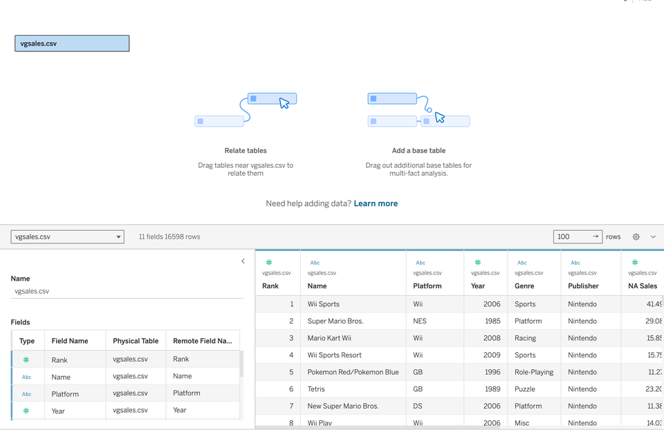
- Connections: שם הקובץ וסוגו תואמים את הקובץ שנבחר.
- Fields: ליד כל שדה מוצג סימן: # מציין מספר, Abc מציין טקסט, וסמל לוח שנה מציין תאריך.
- התצוגה המקדימה: הטבלה עצמה, ללא שורות חריגות.
האזור Canvas וההגדרות Physical Table ו-Remote אינם נדונים בשלב זה.
השדה Year: בקובץ 271 משחקים ללא שנה ידועה, ובשדה Year שלהם מופיע הערך N/A. הערך N/A קיים בקובץ המקורי, ונתונים אמיתיים כוללים ערכים חסרים (למשל Madden NFL 2004 בפלטפורמה PS2). ייתכן ש-Year ייטען כמספר וייתכן שייטען כטקסט, ולכן בודקים את האייקון ליד Year: # הוא מספר, Abc הוא טקסט. אם מוצג Abc, יש ללחוץ על האייקון ולבחור Number (whole), ולוודא שמוצג #. סוג השדה משפיע על התרשים הבא.
גיליון עבודה ו-Data pane
המעבר לבניית תרשים מתבצע בלחיצה על הלשונית Sheet 1 בתחתית המסך. התוצאה: נפתח גיליון עבודה. במרכז מופיע שטח ציור ריק, ומעליו שני מדפים (Columns ו-Rows). בצד שמאל מופיעה רשימת השדות, הנקראת Data pane, ובה קו המפריד בין שני חלקים:
- מעל הקו: ממדים (Dimensions), שדות המתארים ומקבצים, כמו Genre ו-Platform.
- מתחת לקו: מדדים (Measures), שדות מספריים שאפשר לחבר, כמו Global Sales. הקו עובר מתחת לשורה Measure Names.
- מיקומו של Year, מעל הקו או מתחתיו, נבדק על המסך ואינו מוכתב מראש.

בדיקת מספר הרשומות
בתחתית רשימת המדדים (Measures) מופיע שדה שסופר שורות, ש-Tableau מוסיף לכל קובץ. בגרסאות חדשות שמו הוא שם הקובץ ואחריו (Count), למשל vgsales.csv (Count). בגרסאות ישנות שמו Number of Records. להלן הוא נקרא שדה הספירה. הרציונל: ספירת השורות מאמתת שהקובץ נטען במלואו.
- יש לאתר את שדה הספירה בתחתית רשימת המדדים וללחוץ עליו פעמיים.
התוצאה: בגיליון מוצג מספר אחד או עמודה אחת. אם מוצגת עמודה בלבד, יש לרחף מעליה עם העכבר (Hover): הערך מוצג בחלון קטן, הנקרא Tooltip.
נקודת בדיקה (Checkpoint): כל משתתף מקליד בצ׳אט, וגם בתיבה כאן, את הערך המוצג אצלו בגיליון לאחר הלחיצה על שדה הספירה, כלומר את מספר הרשומות בקובץ. ערך שונה מצביע על שלב שבוצע אחרת.
לפני המשך: יש לגרור את ה-Pill של שדה הספירה אל מחוץ למדף, או ללחוץ Ctrl+Z (ב-Mac: Cmd+Z). הבלוק הבא מתחיל בתרשים ריק.
יישום: דוח תקינות נתונים. זמן: 2 דקות. מנהל הנתונים מבקש לאמת את הקובץ לפני הניתוח.
- במסך Data Source יש לספור את השדות ברשימת Fields.
- יש להקליד בצ׳אט שני פרטים: מספר הרשומות (מ-CP1) ומספר השדות. את מספר השדות יש להקליד גם בנקודת הבדיקה שלהלן.
הרציונל: הדוח מאמת את היקף הקובץ לפני הניתוח, ומזהה בעיות טעינה בשלב מוקדם.
נקודת בדיקה CPa2: כל משתתף מקליד בצ׳אט, וגם בתיבה כאן, את מספר השדות ברשימת Fields.
שימוש מקצועי: בקמעונאות, אנליסט שמקבל קובץ מכירות ממערכת הארגון בודק תחילה את מספר השורות ואת הערכים החסרים, ורק לאחר מכן בונה תרשימים. בדיקה זו מונעת טעויות בניתוח.
חלוקת זמן
| שעון | מה קורה |
|---|---|
| 0:43 עד 0:46 | CSV, מסך הפתיחה והחיבור ל-vgsales.csv דרך Text file. תרגול מודרך: המשתתפים מבצעים את אותן פעולות. |
| 0:46 עד 0:51 | מסך Data Source: המפה, הסימנים # ו-Abc, והשדה Year עם הערכים N/A. תיקון Year ל-Number (whole) במי שמוצג אצלו Abc. |
| 0:51 עד 0:54 | Sheet 1, Data pane והקו המפריד בין ממדים למדדים. |
| 0:54 עד 0:56 | שדה הספירה ונקודת בדיקה CP1. |
| 0:56 עד 0:58 | יישום: דוח תקינות נתונים ונקודת בדיקה CPa2. |
מה אומרים
- ״לפני בניית תרשים בודקים את הנתונים. הפעולה הראשונה היא בדיקה ולא גרירה.״
- ״CSV הוא קובץ טקסט שבו פסיקים מפרידים בין העמודות. לכן מתחברים אליו דרך Text file.״
- ״האזור Canvas וההגדרות Physical Table ו-Remote אינם נדונים כעת. הם נדונים בהמשך, בעת חיבור של כמה טבלאות.״
- ״בשדה Year מופיע הערך N/A. הסימן שליד Year נבדק על המסך, ואין להניח אותו מראש.״
- ״הקו ברשימת השדות מפריד בין ממדים למדדים. המדדים מתחילים מתחת לשורה Measure Names.״
- ״ב-Mac לוחצים Control + קליק במקום קליק ימני.״
- ״נקודת בדיקה (Checkpoint): כל משתתף מקליד בצ׳אט את הערך המוצג אצלו.״
מה מדגימים
- הערת אימות: מסך הפתיחה ושם שדה הספירה (vgsales.csv (Count) בגרסאות חדשות, Number of Records בגרסאות ישנות) לא אומתו בתוכנה המותקנת. ההדגמה מותאמת למה שמוצג על המסך.
- שיתוף של חלון Tableau בלבד, בגודל מלא. מסך הפתיחה: להזכיר בקול את Connect ולהפעיל Text file.
- בחירת vgsales.csv מהתיקייה Vizu. להזכיר בקול את הווריאנט של Mac. להמתין לטעינה.
- מסך Data Source: להקריא את Connections (vgsales.csv, Text file) ואת הסימנים ליד השדות, ולציין בקול איזה סימן מוצג ליד Year. לגלול בתצוגה המקדימה אל שורה שבה Year הוא N/A (Madden NFL 2004).
- לחיצה על Sheet 1. סקירת Data pane והצבעה על הקו שמתחת ל-Measure Names.
- לחיצה כפולה על שדה הספירה. ריחוף מעל העמודה והקראת הערך: 16,598.
צ׳אט, סקרים ודגלים
- סקר מהיר: איזה סימן מוצג ליד Year, # או Abc. אם רבים משיבים Abc, יש לעצור ולתקן את סוג השדה לכולם לפני ההמשך, מפני שהדבר משפיע על התרשים הבא.
- נקודת בדיקה CP1: הערך הנכון הוא 16598. הערך 11 מצביע על קריאת מספר השדות. הערך 271 מצביע על קריאת מספר ערכי N/A. ערך שונה ב-1 בלבד מצביע על טיפול שגוי בשורת הכותרות.
- נקודת בדיקה CPa2 (יישום): הערך הנכון הוא 11. הערך 16598 מצביע על קריאת מספר הרשומות.
- דגל סטטוס: ירוק פירושו שהמשתתף השלים את הצעד האחרון שהוצג, ואדום פירושו שיש לו בעיה. משתתף שנתקע יותר משלוש דקות מסמן דגל אדום וממשיך, ועוזר מצטרף אליו.
עוזרים
- משתתף שאינו מוצא את הקובץ: להעתיק אותו לתיקייה Vizu, ללא עברית וללא רווחים (כולל קובץ ב-OneDrive שטרם ירד).
- משתתף שמוצג אצלו Abc ליד Year: לסייע בבחירה ב-Number (whole). מצב Year נבדק על המסך ואינו מוכתב מראש.
- לרשום מי נשאר עם דגל אדום, כדי לטפל בו בהפסקה ולא באמצע ההסבר.
אם מאחרים או מקדימים
- מאחרים: לקצר את סקירת המפה לדקה אחת, לדלג על התצוגה המקדימה ולהקדיש את היישום לנקודת הבדיקה CPa2 בלבד.
- מקדימים: לבקש ממשתתף להסביר את ההבדל בין # ל-Abc, ולהציג את שדה הספירה גם דרך מסך Data Source.
התרשים הראשון
22 דק׳הרציונל: כל תרשים ב-Tableau נבנה משני מדפים וכרטיס אחד. Columns קובע את הציר האופקי, Rows קובע את הציר האנכי, ו-Marks קובע את אופן הצגת הנקודות. הבנת שלושת הרכיבים מאפשרת לבנות את רוב התרשימים בהמשך הקורס.
מבנה גיליון העבודה
יש ללחוץ על כל חלק במפה ולקרוא את תיאורו.
המדפים Columns ו-Rows
| המדף | הציר | דוגמה |
|---|---|---|
| Columns | האופקי (X), משמאל לימין | Year: להצגת התפתחות על פני שנים |
| Rows | האנכי (Y), מלמטה למעלה | Global Sales: להצגת כמות המכירות |
פילוח לפי צבע, למשל לפי Genre, אינו מבוצע בהוספת שדה ל-Rows, מפני שהוספה כזו יוצרת תרשימים נוספים. הצבע נקבע ב-Marks, והנושא נדון בבלוק הבא.
בניית התרשים הראשון
- יש לוודא שנמצאים ב-Sheet 1 ושהגיליון ריק.
- יש לגרור את Year מה-Data pane אל המדף Columns.
- יש לגרור את Global Sales מה-Data pane אל המדף Rows.
התוצאה: הציר האופקי מציג שנים והציר האנכי מציג מספרים, אך צורת התרשים תלויה במצבו של Year. יש שלוש תוצאות אפשריות. הראשונה והשנייה תקינות, והשלישית היא מלכודת Year:
| מה מוצג | המשמעות | מה עושים |
|---|---|---|
| Pill ירוק וקו שעולה, מגיע לשיא ויורד | Year רציף | להמשיך |
| Pill כחול ועמודות, ובהן עמודה בשם Null או N/A | Year בדיד | להמשיך. להחזרת קו: Continuous |
Pill שכתוב בו SUM(Year), ונקודה אחת בלבד | Year נטען כמדד (מלכודת Year) | בתפריט ה-Pill לבחור Dimension, ולבדוק את הצבע |
יחידות: המספרים ב-vgsales הם מיליוני עותקים שנמכרו, ולא שקלים. הערך 678.9 פירושו 678.9 מיליון עותקים. לאחר הבדיקה יש לכתוב בצ׳אט את צבע ה-Pill של Year: ״ירוק״ או ״כחול״.
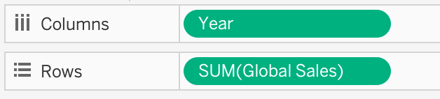
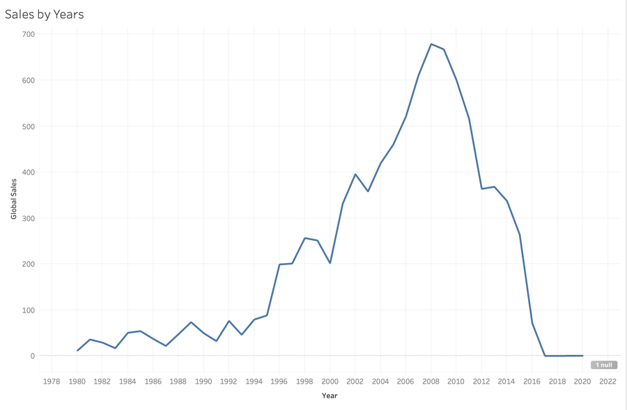
פעולות ברירת המחדל של Tableau
Tableau מסיק מהשדות שנגררו איזה חישוב וסוג תרשים מתאימים, ומציג אותם כברירת מחדל:
- חישוב מסכם (SUM): ב-Rows מופיע
SUM(Global Sales). Tableau סיכם את המכירות של כל המשחקים בכל שנה. אפשר לשנות את החישוב, והשינוי מוצג בבלוק הבא. - Marks Automatic: בכרטיס Marks מופיע Automatic. המשמעות: סוג התרשים נבחר על ידי Tableau.
- קו או עמודות: כש-Year רציף (ירוק), Tableau בוחר Line. כש-Year בדיד (כחול), הוא בוחר עמודות. הרציונל: תרשים קו מראה רצף.
מלכודת Year: אם ב-Pill של Year מופיע SUM(Year), Tableau קרא את השנים כמדד והוא מחבר אותן זו לזו. התוצאה: נקודה אחת בלבד, וערך הציר האופקי הוא 32,758,598. הפתרון: ללחוץ על החץ הקטן שליד ה-Pill, לבחור Dimension, ולבדוק שוב את התרשים.
קריאת ערכים: Tooltip
ריחוף עם העכבר (Hover) מעל הנקודה הגבוהה בתרשים, או מעל העמודה הגבוהה אם מוצגות עמודות, פותח חלון קטן הנקרא Tooltip. החלון מציג את השנה ואת המכירות של הנקודה.
נקודת בדיקה CP2: כל משתתף מקליד בצ׳אט, וגם בתיבה כאן, את הערך המוצג ב-Tooltip מעל הנקודה הגבוהה בתרשים.
שינוי סוג התרשים: שתי דרכים
אפשר לשנות את התרשים מקו לעמודות בשתי דרכים תקינות. הדרך הישירה: המשתמש קובע בעצמו את סוג התרשים, למשל Bar (תרשים עמודות).
- בכרטיס Marks יש ללחוץ על התיבה שבה מופיע Automatic ולבחור Bar.
התוצאה: אותם נתונים מוצגים בעמודות. הרציונל: עמודות משוות בין ערכים נפרדים. להחזרה יש לבחור שוב Automatic. הדרך העקיפה: סוג התרשים אינו משתנה ב-Marks, והשינוי מבוצע בשדה עצמו: לחיצה על החץ הקטן שליד ה-Pill של Year (ב-Mac אפשר גם Control + קליק) ובחירה ב-Discrete. בתפריט מופיעים גם Dimension, Measure ו-Continuous, ואחד מהם מסומן ב-V.
התוצאה: ה-Pill הופך לכחול והקו הופך לעמודות, למרות ש-Marks נשאר על Automatic. להחזרת הקו יש לבחור Continuous. אם Year כבר היה בדיד, הפעולה ההפוכה מציגה קו.
| Discrete בדיד | Continuous רציף | |
|---|---|---|
| צבע ה-Pill | כחול | ירוק |
| מה Tableau יוצר | כותרות (Headers), לכל ערך כותרת משלו | ציר אחד רציף |
| התוצאה ב-Automatic | עמודות | קו |
כלל לזכירה: רציף נותן קו, בדיד נותן עמודות. צבע ה-Pill מציין אם השדה בדיד או רציף, ואינו מציין אם השדה הוא ממד או מדד.


מחוון ה-null
כש-Year נטען כמספר, מוצג בפינה הימנית התחתונה מחוון ה-null: תווית אפורה שמכילה את המילה null או unknown ומספר, למשל 1 null. המספר מונה נקודות שלא צוירו, ולא משחקים. הנקודות האלה מייצגות את 271 המשחקים ללא שנה ידועה (N/A), ש-Tableau אינו יכול למקם על ציר של שנים. אם Year בדיד, אין מחוון, והמשחקים האלה מופיעים בעמודה נפרדת.
- אם המחוון מוצג, יש ללחוץ עליו.
- יש לקרוא את האפשרויות. לפי התיעוד של Tableau מוצגות אפשרויות כמו Filter Data (מוציא את הערכים החסרים מהתרשים ומהחישובים) ו-Show Data at Default Position (מציג אותם במיקום ברירת מחדל, למשל באפס). הסתרת המחוון מתבצעת בקליק ימני עליו.
- בשלב זה אין לבחור אפשרות. יש לסגור את התפריט בלחיצה מחוץ לו ולהשאיר את המחוון מוצג, כדי לשמור על מודעות לנתונים חסרים.
אם התפריט אצלכם שונה, יש לפעול לפי הכיתוב על המסך ולבחור את האפשרות המקבילה.
מעבדת צירים (אופציונלית)
במעבדה יש לבחור ב-Rows את Year (as a number) ולקרוא את ההסבר: זוהי מלכודת Year.
יישום: שנת השיא בצפון אמריקה. זמן: 4 דקות. מנהל משחקים שואל באיזו שנה נמכר מספר העותקים הגבוה ביותר בצפון אמריקה.
- ב-Sheet 1 יש לגרור את ה-Pill של Global Sales אל מחוץ ל-Rows, ולגרור במקומו את NA Sales (מכירות צפון אמריקה).
- יש לרחף מעל הנקודה הגבוהה בתרשים ולקרוא את השנה.
- יש להקליד את השנה בנקודת הבדיקה שלהלן ובצ׳אט, ולהחזיר את Global Sales אל Rows.
הרציונל: החלפת שדה ב-Rows משנה את השאלה שהתרשים עונה עליה, ואילו המדפים והחישוב נשארים זהים.
נקודת בדיקה CPa3: כל משתתף מקליד בצ׳אט, וגם בתיבה כאן, את השנה שבה NA Sales הוא הגבוה ביותר.
שימוש מקצועי: בקמעונאות, תרשים קו של מכירות לפי חודש משמש לזיהוי עונתיות ומגמות. המבנה זהה לתרשים שנבנה כאן: זמן ב-Columns ומכירות ב-Rows. כדי למנוע בלבול בין סך מכירות למכירה ממוצעת, בודקים בכל תרשים איזה חישוב מסכם מופיע ב-Pill.
אנליסט בונה שני תרשימים מאותו שדה Year: בתרשים אחד נדרשת עמודה נפרדת לכל שנה, ובתרשים השני נדרשת מגמה רציפה לאורך כל התקופה. איזו טענה נכונה?
- בשני התרשימים Year חייב להיות רציף, מפני ש-Year הוא מספר, ואת סוג התרשים קובעים רק ב-Marks
- בתרשים העמודות Year צריך להיות בדיד (כל שנה בכותרת משלה), ובתרשים המגמה Year צריך להיות רציף (ציר שנמשך ברצף)
- בשני התרשימים Year חייב להיות בדיד, מפני ש-Year הוא ממד, ורציף מתאים רק למדדים
- בתרשים העמודות Year צריך להיות רציף, ובתרשים המגמה בדיד, מפני שעמודות מציגות רצף וקו מציג ערכים נפרדים
חלוקת זמן
| שעון | מה קורה |
|---|---|
| 0:58 עד 1:00 | מפת המסך (Anatomy): לחיצה על כל חלק, והסבר של Columns ו-Rows. |
| 1:00 עד 1:05 | תרגול מודרך: Year אל Columns ו-Global Sales אל Rows. טבלת שלוש התוצאות, Marks Automatic, SUM. סקר ירוק או כחול. |
| 1:05 עד 1:08 | Hover ו-Tooltip ונקודת בדיקה CP2. |
| 1:08 עד 1:13 | שתי הדרכים: Marks > Bar בהדגמה חיה, ומסלול תפריט ה-Pill (Discrete ו-Continuous) דרך הטבלה. כחול וירוק. |
| 1:13 עד 1:15 | מחוון ה-null: מה הוא ומה הוא מציע. |
| 1:15 עד 1:16 | מעבדה אופציונלית ומלכודת Year (דקה). |
| 1:16 עד 1:20 | יישום: שנת השיא בצפון אמריקה ונקודת בדיקה CPa3. הפריט המושגי (a3q1) נדון בקצרה אם נותר זמן. |
מה אומרים
- ״Columns ו-Rows הם הבסיס לכל תרשים. Columns הוא הציר האופקי, Rows הוא הציר האנכי.״
- ״ב-Rows מופיע SUM(Global Sales). Tableau סיכם את המכירות מעצמו. אפשר לשנות את החישוב, והשינוי מוצג בבלוק הבא.״
- ״בכרטיס Marks מופיע Automatic: Tableau בוחר את סוג התרשים לפי השדות. עבור Year רציף נבחר קו, ועבור Year בדיד נבחרות עמודות.״
- ״רציף יוצר קו, בדיד יוצר עמודות. בניסוח של Tableau: בדיד יוצר כותרות, רציף יוצר ציר. כחול הוא בדיד, ירוק הוא רציף.״
- ״בדרך הישירה משנים את Marks. בדרך העקיפה משנים את ה-Pill. שתיהן תקינות.״
- ״המחוון האפור מציין שחסרים נתונים בתרשים. מבינים אותו ואין למחוק אותו.״
- ״המספרים כאן הם מיליוני עותקים ולא שקלים. יש לבדוק את היחידות בכל תרשים.״
מה מדגימים
- הערת אימות: הטיפוס שבו Year נטען, הצבע הראשוני של ה-Pill, ניסוח התפריט של מחוון ה-null ותצוגת הערכים ב-Tooltip לא אומתו בתוכנה המותקנת. ההדגמה מותאמת למה שמוצג על המסך.
- Anatomy: ללחוץ על Data pane, Columns, Rows ו-Marks. לשאול משתתף איפה ממוקם הציר האופקי.
- Year אל Columns, Global Sales אל Rows. להקריא בקול את שם ה-Pill (
SUM(Global Sales)) ואת הצבע של Year, ולהצביע על שורת הטבלה שמתאימה. לבקש בצ׳אט: ירוק או כחול. - הדגמת מלכודת Year מכוונת: בתפריט ה-Pill של Year לבחור Measure, להציג נקודה אחת עם
SUM(Year)וערך של 32,758,598, ולחזור ל-Dimension. - Hover מעל הנקודה הגבוהה: שנת 2008 עם 678.9. אחריה שנת 2009 עם 667.3 ושנת 2007 עם 611.13.
- Marks > Bar, וחזרה ל-Automatic. לאחר מכן Discrete ו-Continuous בתפריט ה-Pill, והצגת החלפת הצבע בין כחול לירוק.
- לחיצה על המחוון האפור (אם מוצג) והקראת האפשרויות, ללא בחירה.
צ׳אט, סקרים ודגלים
- סקר ירוק או כחול: התוצאה קובעת מה לומר לכיתה. ירוק פירושו קו, כחול פירושו עמודות, ומי שמוצגת אצלו נקודה אחת נמצא במלכודת Year. אם רבים מקבלים עמודות או נקודה אחת, יש לתקן את סוג Year לכולם לפני ההמשך.
- נקודת בדיקה CP2: הערך הנכון הוא 678.9 (שנת 2008). הערך 32758598 מצביע על מלכודת Year. הערך 0.54 הוא ממוצע כל הקובץ, ולא ערך של שנה. כשב-Rows נבחר AVG, הערך הגבוה בתרשים לפי שנים קטן בהרבה מהערך הנכון. הערך 8920.44 מצביע על קריאת הסכום הכולל.
- נקודת בדיקה CPa3 (יישום): הערך הנכון הוא 2008. שנת השיא של NA Sales זהה לשנת השיא של Global Sales. הערך 678.9 מצביע על כך ש-Global Sales נשאר ב-Rows.
- דגל סטטוס: בקשת סימון ירוק ממי שהשלים את CP2. העוזרים מטפלים בדגלים האדומים בזמן היישום.
עוזרים
- לאתר תרשימים עם נקודה בודדת או עם SUM(Year) ולהסביר לפי תיבת ההסבר בבלוק.
- לאתר מי בחר AVG בטעות, ומי נשאר בגיליון עם Pill של שדה הספירה מהבלוק הקודם.
- משתתף שאין לו מחוון null: לבדוק אם Year הוא טקסט או בדיד. אין צורך בתיקון אם התרשים תקין.
אם מאחרים או מקדימים
- מאחרים: לדלג על המעבדה ולשמור את היישום ואת CPa3.
- מקדימים: מי שסיים לפני הזמן ממשיך לתרשים נוסף מאותו בלוק, למשל Other Sales לפי Year. בנוסף לדון בפריט a3q1, ולבקש מכל משתתף לצפות מה יוצג לפני החלפת Year בין בדיד לרציף.
שמירה ופרסום ראשוניים
10 דק׳הרציונל: בשלב הפרסום מתרחשות תקלות רבות: חשבון, הודעת הפעלה ומסך לבן. לכן מפרסמים כבר עכשיו, לפני ההפסקה, תרשים קטן. תקלה שתתגלה כעת תטופל בהפסקה, ולא בסוף המפגש עם דשבורד שלם. הבדיקה מתמקדת בתהליך הפרסום ולא באיכות התרשים.
כל מה שמפורסם ב-Tableau Public הוא ציבורי. מי שמחזיק בקישור יכול לצפות בעבודה, וכברירת מחדל גם להוריד אותה ואת הנתונים שלה. הסתרה (Hide) אינה הופכת עבודה לפרטית. לכן מפרסמים רק את הקבצים שסופקו בקורס (vgsales ובהמשך Scoop & Go), נותנים לעבודה שם עם כינוי, ואין להעלות שם אמיתי, ציונים או נתוני לקוחות.
שלב 1: שמירה מקומית
הרציונל: קובץ שמור במחשב הוא גיבוי, והוא נשאר גם אם הפרסום נכשל. הקובץ נשמר בפורמט twbx (Packaged Workbook): קובץ אחד שמכיל את התרשים ואת הנתונים. בשמירה Tableau עשוי להציע את התיקייה My Tableau Repository, שהוא יוצר בתוך Documents. בקורס נבחרת התיקייה Vizu.
- בתפריט File יש לבחור Save As, הפקודה לשמירה במחשב. ב-Mac התפריט נמצא בשורת התפריטים שבראש המסך.
- יש לבחור את התיקייה
Vizu, לכתוב את השםVizu_checkpoint_1_ואחריו הכינוי, ובסוג הקובץ לבחור twbx. - יש ללחוץ Save.
התוצאה: בראש החלון, במקום Book1 (השם הזמני של עבודה שטרם נשמרה), מופיע השם Vizu_checkpoint_1_ ואחריו הכינוי. לפי הדיווחים, כפתור השמירה שבסרגל הכלים עשוי לפתוח שמירה לענן ולא שמירה במחשב, ולכן לשמירה מקומית משתמשים ב-File > Save As. אם התפריט אצלכם שונה, יש לפעול לפי הכיתוב על המסך ולבחור את האפשרות המקבילה.

שלב 2: פרסום והעתקת קישור
הפקודה Save to Tableau Public מעלה את העבודה (Workbook) לחשבון Tableau Public שנוצר בתחילת המפגש, וההתחברות אליו (Sign in) מתבצעת בעת הצורך. לאחר ההעלאה נפתח דף העבודה בדפדפן, והכפתור Share מציג שתי שורות: Embed Code, המיועד להטמעה באתר, ו-Link, הקישור לשיתוף. הרציונל להעתקת Link: זהו הקישור שנשלח לאדם אחר.
יישום: קישור לתרשים המכירות העולמי. זמן: 5 דקות. מנהל השיווק מבקש קישור לתרשים של מכירות לפי שנה, כדי לפתוח אותו בדפדפן.
- בתפריט File יש לבחור Save to Tableau Public. ייתכן שהפקודה נקראת Save to Tableau Public As, או שהיא נמצאת בתפריט Server, תחת Tableau Public. יש לקרוא מה שכתוב על המסך.
- אם מתבקשים, יש להתחבר עם חשבון Tableau Public.
- יש לתת שם לעבודה:
Vizu_Test_ואחריו כינוי, למשלVizu_Test_Grill7. אין לכלול שם משפחה או שם אמיתי. - יש ללחוץ Save. לאחר מספר שניות נפתח הדפדפן ומציג את התרשים.
- בדף שנפתח, בסרגל שמעל התרשים, יש ללחוץ על Share (בחלון צר הכפתור נמצא בתפריט ״...״), ואז על Copy Link בשורה Link (השנייה) ולהדביק את הקישור בצ׳אט (
Ctrl+V, ב-Mac:Cmd+V) ובנקודת הבדיקה שלהלן.
הרציונל: קישור שנפתח בדפדפן הוא התוצר הסופי של המפגש, ובדיקה מוקדמת מאפשרת לתקן תקלות בהפסקה.
התוצאה: התרשים מוצג באתר Tableau Public, ובשורת הכתובת מופיעה כתובת שכוללת public.tableau.com. הקוד ב-Embed Code אינו נדרש בשלב זה ויוצג בהמשך הקורס.
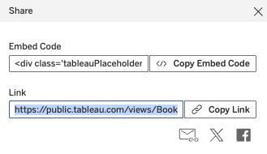
נקודת בדיקה CPpub: כל משתתף מדביק בצ׳אט, וגם בתיבה כאן, את הקישור שהעתיק. הקישור אמור להכיל tableau.com. עוזרים פותחים חמישה קישורים אקראיים כדי לוודא שהם נפתחים. אם הקישור אינו נפתח, יש לסמן דגל סטטוס אדום ולהמשיך: התקלה מטופלת בהפסקה.
שימוש מקצועי: Tableau Public מיועד לנתונים ציבוריים בלבד. ארגון שמעוניין לשתף נתונים פנימיים משתמש ככלל במוצר פרטי אחר, ולא בפרסום ציבורי. לכן לפני כל פרסום בודקים מה כלול בקובץ.
חלוקת זמן
| שעון | מה קורה |
|---|---|
| 1:20 עד 1:22 | הרציונל וכלל הפרטיות: הכול ציבורי, וכינוי בשם העבודה. |
| 1:22 עד 1:25 | שלב 1: File > Save As, twbx, תיקיית Vizu. תרגול מודרך: כולם מבצעים את אותן פעולות. |
| 1:25 עד 1:28 | שלב 2, יישום: Save to Tableau Public, התחברות, שם, דפדפן, Share, Copy Link. |
| 1:28 עד 1:30 | הדבקת קישורים בצ׳אט (CPpub). עוזרים פותחים חמישה קישורים אקראיים, ומשתתפים עם דגל אדום נרשמים לטיפול בהפסקה. |
מה אומרים
- ״בדיקה זו בודקת את תהליך הפרסום ולא את התרשים. התוצר הנדרש הוא קישור אחד שנפתח בדפדפן.״
- ״קודם שומרים במחשב ורק לאחר מכן בענן. הקובץ המקומי הוא גיבוי.״
- ״כל מה שמפורסם הוא ציבורי, וכברירת מחדל גם ניתן להורדה. אין לכלול שם אמיתי, ציונים או נתוני לקוחות. שם העבודה כולל כינוי בלבד.״
- ״מי שקיבל מסך לבן מסמן דגל סטטוס אדום. התקלה מטופלת בהפסקה.״
- ״מעתיקים את הקישור מהשורה Link. את Embed Code לא מעתיקים בשלב זה.״
מה מדגימים
- הערת אימות: מיקום הפקודה (File > Save to Tableau Public או Server > Tableau Public), שם סוג הקובץ ב-Save As והתנהגות כפתור השמירה בסרגל הכלים לא אומתו בתוכנה המותקנת. ההדגמה מותאמת למה שמוצג על המסך. אם מוצג באנר תחזוקה של Tableau Public, יש לדלג על הפרסום ולהשאיר את שלב 1 בלבד.
- File > Save As, השם Vizu_checkpoint_1_ ואחריו הכינוי, סוג twbx. להצביע על שם הקובץ בראש החלון.
- File > Save to Tableau Public. התחברות, שם מהצורה Vizu_Test_ ואחריו כינוי. להמתין לדפדפן.
- Share: להצביע על שתי השורות (Embed Code ו-Link), ללחוץ Copy Link ולהדביק בצ׳אט.
- פתיחת הקישור בלשונית אחרת, כדי להראות שהוא נפתח.
צ׳אט, סקרים ודגלים
- נקודת בדיקה CPpub: כל משתתף מדביק בצ׳אט את הקישור שהעתיק. עוזר אחד מרכז את הקישורים ופותח חמישה אקראיים בזמן שההדגמה נמשכת. קישור שאינו נפתח מצביע על שלב שבוצע אחרת או על תקלה בחשבון.
- דגל סטטוס: אדום לכל משתתף שהפרסום אצלו נכשל. העוזרים רושמים שמות לטיפול בהפסקה.
עוזרים
- מסך לבן: פעולה שמסייעת, לפי הדיווחים, היא התחברות באתר ולאחר מכן חזרה על השמירה. לבדוק את הפרופיל, מפני שלעיתים השמירה הצליחה.
- אין הודעת הפעלה: תיקיית הספאם, איפוס סיסמה, ותוקף של 48 שעות.
- רשת חסומה: נקודה חמה מהטלפון. אם הדבר אינו מועיל, לתעד ולהעביר לטיפול בהפסקה.
- שם עבודה שכולל שם אמיתי: להחליף לכינוי לפני הפרסום.
אם מאחרים או מקדימים
- מאחרים: לקצר את שלב 1 לדקה אחת. אם לא מספיקים, שלושה מתנדבים מפרסמים בשידור חי, והשאר מפרסמים בהפסקה.
- מקדימים: לפתוח את הקישור של מתנדב בחלון אחר ולהראות שהוא נפתח ללא התחברות.
הפסקה 1: 10 דקות
לפני ההפסקה יש לבצע את הפעולות הבאות:
- שמירה: File > Save As, בשם Vizu_checkpoint_1_ ואחריו הכינוי, מסוג twbx, בתיקייה
Vizu. אם הקובץ נשמר לפני מספר דקות ולא בוצע בו שינוי, אין צורך לשמור שוב. - תיקון פרסום: משתתף שלא קיבל קישור, או שנפתח אצלו מסך לבן, מסמן דגל סטטוס אדום. עוזר מצטרף אליו לטיפול בתקלה במהלך ההפסקה.
- מנוחה: יש לקום מהמחשב, לשתות ולהרחיק את המבט מהמסך.
- Tableau נשאר פתוח: פתיחה מחדש נמשכת זמן, והתוכנה נדרשת מיד עם החזרה.
- חזרה ב-1:40: הבלוק הבא עוסק בממד, במדד וב-Marks: ההבדל בין Genre (מחלק) ל-Global Sales (מחבר), וצביעת תרשים.
חלוקת זמן
| שעון | מה קורה |
|---|---|
| 1:30 עד 1:32 | הנחיות להפסקה: שמירה, משתתפים עם דגל אדום נשארים לתיקון עם עוזר, חזרה ב-1:40. |
| 1:32 עד 1:39 | הפסקה. העוזרים מתקנים פרסומים שנכשלו. המרצה יוצא להפסקה. |
| 1:39 עד 1:40 | קריאה לחזרה, ובקשה לסימון דגל סטטוס ירוק ממי שהשלים את השמירה וחזר. |
מה אומרים
- ״הפסקה של 10 דקות. יש לשמור את הקובץ כ-twbx ולהשאיר את Tableau פתוח.״
- ״משתתף שהפרסום אצלו לא הצליח מסמן דגל סטטוס אדום, ועוזר מטפל בו כעת. לכך נועדה בדיקת הפרסום לפני ההפסקה.״
- ״חוזרים ב-1:40. הבלוק הבא עוסק בממד, במדד וב-Marks.״
מה מדגימים
- אין הדגמה. להשאיר על המסך את רשימת ההפסקה (הפעולה לפני ההפסקה ושעת החזרה 1:40).
צ׳אט, סקרים ודגלים
- הודעה בצ׳אט: ״משתתף שהפרסום אצלו עדיין לא הצליח כותב בצ׳אט את המילה פרסום, ועוזר מצטרף אליו.״
- ב-1:39: לבקש דגל סטטוס ירוק ממי שהשלים את השמירה וחזר, ולספור כמה קישורים נפתחו (נקודת בדיקה CPpub).
עוזרים
- מסך לבן: פעולה שמסייעת, לפי הדיווחים, היא התחברות באתר וחזרה על השמירה. בנוסף לבדוק את הפרופיל ואת העוגיות הפונקציונליות.
- אין הודעת הפעלה: תיקיית הספאם, איפוס סיסמה, ותוקף של 48 שעות.
- רשת חסומה: נקודה חמה מהטלפון.
- משתתף שלא הצליח לפרסם עד 1:38 ממשיך ללא פרסום, וחוזר לנושא בבלוק הפרסום בסוף המפגש. אין לעכב את הכיתה בשבילו.
אם מאחרים או מקדימים
- מאחרים: לקצר את ההפסקה ל-8 דקות. משתתפים עם דגל אדום מטופלים בזמן עבודה עצמית בבלוק הבא.
- מקדימים: להאריך עד 12 דקות לכל היותר.
ממד, מדד ו-Marks
22 דק׳הרציונל: בתרשים הראשון Tableau קבע לבד אילו שדות לסכום ואיזה תרשים לצייר. ההחלטה מתבססת על סוג השדה: ממד או מדד. הבנת ההבחנה מאפשרת לתקן את ההחלטה כשהיא אינה מתאימה לשאלה, ולהוסיף צבע, תוויות וגודל לאותו תרשים.
ממד ומדד: שני סוגי שדות
ממד משמש לחלוקת הנתונים לקבוצות, למשל סוג משחק, פלטפורמה ושנה. מדד הוא ערך שמחברים או סופרים, למשל מכירות. שימוש בשדה בתפקיד שאינו מתאים לו מניב תרשים חסר משמעות.
הבדיקה הראשונה: יש לברר מי קובע את עצם קיום הערך.
- גורם חיצוני (הלקוח, השוק): מדד. למשל סכום מכירה בחנות, טמפרטורה במפעל, זמן המתנה במוקד שירות.
- נתון שנקבע על ידי החברה: ממד. למשל סוג המשחק ושנת היציאה שלו.
הבדיקה השנייה: האם הגיוני לחבר את הערכים
חלק מהשדות הם מספרים, ועם זאת הם ממדים. עבורם קיימת בדיקה נוספת: האם הגיוני לחבר את הערכים? אם לא, השדה הוא ממד.
| שדה | משמעות | האם הגיוני לחבר? | סיווג |
|---|---|---|---|
| Platform | הקונסולה שעליה יצא המשחק (PS2, Wii) | לא. אין משמעות לחיבור שמות | ממד |
| Year | שנת היציאה של המשחק | לא. סכום כל השנים בקובץ הוא 32,758,598, ערך חסר משמעות | ממד |
| Rank | מיקום המשחק ברשימה (1, 2, 3...) | לא. חיבור של דירוגים חסר משמעות | ממד, אף שהוא מספר |
| Global Sales | מיליוני עותקים שנמכרו בעולם | כן. הסך הכול הוא 8,920.44 מיליון עותקים | מדד |
הערה: היחידה ב-vgsales היא מיליוני עותקים, לא שקלים.
ב-Data pane: הממדים מופיעים מעל הקו והמדדים מתחתיו. שדה שנמצא בצד שאינו מתאים אפשר להעביר: קליק ימני על השדה (ב-Mac: Control + קליק) ובחירה ב-Convert to Dimension, או גרירה של השדה אל הצד השני של הקו. לאחר ההמרה יש לבדוק את הצבע של ה-Pill: שדה רציף (ירוק) נשאר ירוק גם לאחר שהפך לממד, ואת זה משנים בנפרד, באפשרות Discrete.
אם התפריט אצלכם שונה, יש לפעול לפי הכיתוב על המסך ולבחור את האפשרות המקבילה.
שימוש מקצועי: בקמעונאות, דוח מכירות לפי סניף מחלק לפי ממד (הסניף) ומסכם מדד (המכירות). טעות אפשרית היא סיכום של מספרי טלפון או מספרי עובד כאילו היו ערכים כספיים. הבדיקה ״האם הגיוני לחבר״ מאתרת טעות כזו לפני שהמספר מגיע לקורא הדוח.
בניית תרשים: Genre מול Global Sales
המטרה: לקבוע איזה סוג משחק נמכר במספר העותקים הגבוה ביותר בעולם.
- יש לפתוח גיליון חדש: ללחוץ על הלשונית הקטנה עם סימן + שמימין ללשוניות הגיליונות.
- יש לגרור את Genre אל Columns ואת Global Sales אל Rows.
- בתיבה Marks כתוב Automatic: Tableau בחר את סוג התרשים.
- יש לרחף עם העכבר מעל העמודה הגבוהה ביותר ולקרוא את הערך בחלונית.
התוצאה: 12 עמודות, אחת לכל Genre. הרציונל של Tableau: ממד בציר אחד ומדד בציר השני מניבים תרשים עמודות, שמשווה בין קטגוריות.
נקודת בדיקה (Checkpoint): כל משתתף מקליד בצ׳אט, וגם בתיבה כאן, את הערך של העמודה Action. ערך שונה מצביע על שלב שבוצע אחרת.
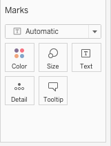
כפתורים נוספים בכרטיס Marks
לכרטיס Marks, מלבד סוג התרשים, יש כפתורים נוספים: Color, Size, Label ו-Detail. כל אחד מוסיף מידע לאותו תרשים, בלי ליצור תרשים נוסף.
- צבע: יש לגרור את Genre אל האזור שמתחת לשם הכרטיס Marks, ללחוץ על האייקון הקטן משמאל לשם ה-Pill ולבחור Color.
- תוויות: יש לגרור את Global Sales אל הכרטיס Marks, ללחוץ על האייקון שלו ולבחור Label.
- גודל: יש ללחוץ על כפתור Size ב-Marks ולשנות את מה שנפתח. בתרשים הזה הפעולה משנה את עובי העמודות.
התוצאה: כל עמודה בצבע שונה, מקרא בצד, ומעל כל עמודה הערך שלה (מעל Action: 1,751.18). כאן הצבע חוזר על מה שהכותרות כבר מציגות ומשמש להדגמה. בתרגיל על השוק היפני הצבע יוסיף מידע חדש. Detail מפרק את התרשים לחלקים נוספים בלי לצבוע, ואינו בשימוש בשיעור הזה.
אם התפריט אצלכם שונה, יש לפעול לפי הכיתוב על המסך ולבחור את האפשרות המקבילה.
חשוב: צבע אינו Rows. גרירת שדה פילוח אל Rows או אל Columns יוצרת תרשים נפרד לכל ערך. פילוח באותו תרשים נעשה ב-Marks > Color. גרירה שגויה אפשר לבטל ב-Ctrl+Z (ב-Mac: Cmd+Z).
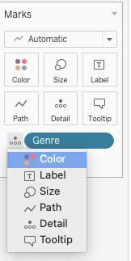
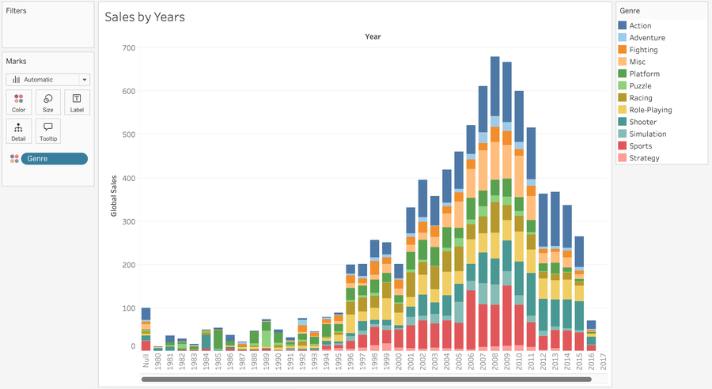
שלוש פעולות על אותו תרשים
Tableau מסכם כברירת מחדל (SUM), אך אפשר לשאול שאלה אחרת באותו תרשים.
- ב-Rows יש ללחוץ על החץ של ה-Pill SUM(Global Sales) ולבחור Measure > Average. יש לבדוק איזו עמודה גבוהה ביותר. סדר העמודות נשאר אלפביתי, כי מיון נלמד בבלוק הבא.
- יש לגרור את שדה הספירה אל Rows, במקום Global Sales. זה השדה בתחתית רשימת המדדים (Measures): בגרסאות חדשות שמו הוא שם הקובץ ואחריו (Count), למשל vgsales.csv (Count), ובגרסאות ישנות Number of Records. הפעולה סופרת שורות, כלומר משחקים, בכל Genre.
- יש להסיר את שדה הספירה מ-Rows ולהחזיר את Global Sales עם הפעולה SUM.
| מה עושים | השאלה שהיא עונה עליה |
|---|---|
| SUM | כמה נמכר בסך הכול? |
| AVG | כמה נמכר בממוצע למשחק? |
| Count (ספירת השורות) | כמה משחקים קיימים? |
התוצאה: ב-SUM ובספירה העמודה הגבוהה ביותר היא Action. בממוצע למשחק היא אחרת. אותם נתונים מניבים תשובה שונה כי השאלה שונה.

הכפתור Show Me
ב-Show Me (בצד ימין של הגיליון, או ככפתור בסרגל הכלים, בהתאם לגרסה) מוצגים סוגי התרשימים שאפשר לבנות מהשדות שעל הגיליון. יש לרחף, בלי ללחוץ, מעל כמה סוגי תרשימים: בכל אחד מצוין כמה Dimensions וכמה Measures הוא דורש, וסוגים באפור אינם מתאימים. לחיצה עשויה להחליף את כל התרשים ולהוסיף שדות שלא נבחרו, כמו Measure Names, ולכן Show Me משמש לבדיקת האפשרויות ואינו תחליף להחלטה על התרשים.
יישום: ביקוש ביפן (5 דקות). מנהל משחקים שוקל כניסה לשוק היפני. עליו לדעת איזה סוג משחק נמכר שם במספר העותקים הגבוה ביותר, ואילו פלטפורמות תורמות לו. הרציונל: צבע לפי Platform מוסיף ממד שני לאותו תרשים.
- גיליון חדש. יש לגרור את Genre אל Columns ואת JP Sales אל Rows. (JP: יפן.)
- יש לגרור את Platform אל Marks ולבחור Color.
- התוצאה: עמודות שכל אחת מורכבת מפרוסות צבעוניות, ומקרא עם 31 פלטפורמות. צבע מתאים לכמה ערכים בודדים, ולכן 31 צבעים אינם ניתנים להבחנה ברורה. בבלוק הבא נלמד לצמצם את התצוגה באמצעות סינון.
נקודת בדיקה (Checkpoint): כל משתתף מקליד בצ׳אט את הערך של העמודה הגבוהה ביותר. ערך שונה מצביע על שדה או פעולה שנבחרו אחרת.
יישום: ממוצע באירופה (3 דקות). מנהל מוצר שואל איזה סוג משחק מוכר באירופה, בממוצע למשחק, את הכמות הגבוהה ביותר. הרציונל: ממוצע למשחק עונה על שאלה שונה מהסכום, ולכן התשובה עשויה להיות סוג משחק אחר.
- גיליון חדש: Genre אל Columns, EU Sales אל Rows. (EU: אירופה.)
- יש להחליף את הפעולה ל-Average בתפריט ה-Pill.
- התוצאה: העמודה הגבוהה ביותר היא Shooter. יש להקליד את הערך שלה.
נקודת בדיקה (Checkpoint): כל משתתף מקליד בצ׳אט את הערך של העמודה הגבוהה ביותר, בעיגול של שתי ספרות. ערך שונה מצביע על שדה או פעולה שנבחרו אחרת.
ב-Tableau שדה מספרי כמו Rank נמצא לעיתים כברירת מחדל בין המדדים. מנהל מבקש תרשים של ״סך הדירוגים״ של כל Genre. מה הערכה המדויקת ביותר?
- התרשים משמעותי, כי Tableau סיווג את Rank כמדד וכל מדד אפשר לסכום
- התרשים חסר משמעות: חיבור דירוגים אינו מתאר כמות, ולכן Rank הוא ממד, גם אם הברירת מחדל מיקמה אותו בין המדדים
- אי אפשר לבנות את התרשים ב-Tableau, כי אי אפשר לסכום שדה מספרי שהוא דירוג
- התרשים משמעותי, כי ממוצע של דירוגים מתאר את איכות המשחקים
חלוקת זמן
| שעה | מה קורה |
|---|---|
| 1:40 עד 1:44 | ממד ומדד: הבדיקה הראשונה, הבדיקה השנייה, סקר בצ׳אט על Rank (הדגמה, 4 דק׳) |
| 1:44 עד 1:48 | בניית Genre מול Global Sales בליווי המרצה. נקודת בדיקה CP3 (תרגול מודרך, 4 דק׳) |
| 1:48 עד 1:51 | Marks: Color ומקרא, Label, Size (3 דק׳) |
| 1:51 עד 1:53 | SUM, AVG וספירה על אותו תרשים (2 דק׳) |
| 1:53 עד 1:54 | Show Me: ריחוף בלבד (1 דק׳) |
| 1:54 עד 2:02 | יישומים: ביקוש ביפן (5 דק׳, CP3j) וממוצע באירופה (3 דק׳, CP3e). שאלת ההבנה, אם נשאר זמן |
מה אומרים
- בתרשים הראשון Tableau קבע לבד את הסיכום ואת סוג התרשים. נבדוק עכשיו לפי מה הוא מחליט.
- הבדיקה הראשונה: מי קובע את עצם קיום הערך. גורם חיצוני, כמו הלקוח או השוק: מדד. החברה: ממד.
- הבדיקה השנייה מתאימה לשדות מספריים כמו Rank ו-Year: בודקים אם הגיוני לחבר את הערכים, ואם לא, השדה הוא ממד.
- צבע אינו נעשה ב-Rows. Rows יוצר תרשימים נוספים. צבע נעשה ב-Marks.
- אותו תרשים עונה על שלוש שאלות: סכום, ממוצע וספירה. שינוי בגובה היחסי של העמודות אינו תקלה, אלא תוצאה של שאלה אחרת. סדר העמודות נשאר אלפביתי עד המיון בבלוק הבא.
- ב-Show Me מרחפים ואין ללחוץ. לחיצה עלולה להוסיף Measure Names.
- ב-Mac, קליק ימני הוא Control + קליק. יש לומר זאת בכל פעם שמופיע קליק ימני.
מה מדגימים
- מצביעים על הקו ב-Data pane: ממדים מעל, מדדים מתחת. שואלים בצ׳אט על Platform, Year, Rank ו-Global Sales. הצפוי: ממד, ממד, ממד, מדד.
- גיליון חדש: Genre אל Columns, Global Sales אל Rows. הצפוי: 12 עמודות, Action הגבוהה ביותר, 1,751.18 (אחריה Sports 1,330.93, Shooter 1,037.37, והנמוכה Strategy 175.12). CP3 הוא 1,751.18.
- Genre אל Marks, Color: מופיע מקרא. Global Sales אל Marks, Label: ערכים מעל העמודות. Size: משנים ורואים שינוי בעובי.
- Average מתפריט ה-Pill. הצפוי: Action אינו ראשון, והז׳אנר Platform (ערך בשדה Genre, ולא השדה Platform) ראשון. אחר כך שדה הספירה (vgsales.csv (Count)): Action ראשון שוב. מסירים אותו מ-Rows וחוזרים ל-SUM.
- Show Me: מרחפים מעל שלושה סוגי תרשימים וקוראים בקול את הדרישות של כל אחד.
- יישום ביפן: JP Sales ו-Platform בצבע. הצפוי: העמודה הגבוהה ביותר היא Role-Playing (בקירוב 352.3), אחריה Action ו-Sports (הערכים בקירוב: 352.3, 160.0, 135.4; בחלונית מופיעות שתי ספרות אחרי הנקודה).
צ׳אט, סקרים ודגלים
- סקר בצ׳אט: כל משתתף מקליד ״ממד״ או ״מדד״ עבור Rank. המרצה מונה את התשובות ואחר כך מציג את הבדיקה השנייה.
- נקודת בדיקה CP3: כל משתתף מקליד בצ׳אט את הערך של Action. ערכים שגויים נפוצים: 1,330.93 (נקראה עמודה אחרת), 8,920.44 (Genre אינו ב-Columns), 0.53 (AVG במקום SUM), 0.54 (AVG של כל הקובץ, כש-Genre אינו ב-Columns).
- נקודות בדיקה CP3j (352.3) ו-CP3e (0.24, ממוצע EU Sales של Shooter).
- מי שנתקע מסמן דגל אדום ועוזר יגיע.
עוזרים
- לזהות מי גרר Genre אל Rows (עשרות תרשימים קטנים).
- מי שמקבל SUM(Year) או מספר גדול מאוד: Year נטען כמספר ומסוכם. יש להמיר אותו ל-Dimension ולבדוק את הצבע.
- משתמשי Mac: לוודא שהם מוצאים את Control + קליק.
אם מאחרים או מקדימים
- מאחרים: לדלג על Size ועל Show Me (אזכור במשפט אחד), ולהשאיר את היישום השני למי שסיים.
- מקדימים: שאלת ההבנה על Rank. מי שסיים לפני הזמן ממשיך לתרשים נוסף מאותו בלוק (למשל Other Sales לפי Genre: Action, 187.38).
Sort, Filters ו-Exclude: ניסוח שאלה ממוקדת
23 דק׳הרציונל: תרשים עונה על שאלה אחת. הצגה של כל הז׳אנרים ושל כל השנים אינה עונה על שאלה ממוקדת. מיון, סינון ו-Exclude קובעים מה מוצג ובאיזה סדר. כלל יסוד: פילטר מסתיר ערכים, הוא אינו מוחק אותם.
Sort: מיון עמודות
- יש לפתוח גיליון חדש. יש לגרור את Genre אל Columns ואת Global Sales אל Rows.
- בסרגל הכלים העליון יש ללחוץ על לחצן המיון, מהגבוה לנמוך.
התוצאה: Action ראשון, בגובה 1,751.18, ו-Strategy אחרון, בגובה 175.12. תרשים ממוין מאפשר לזהות מיד איזה ערך מוביל. קיימת גם דרך מיון בתוך התרשים: ריחוף מעל הציר או מעל כותרות העמודות מציג סמל מיון קטן. אם התפריט אצלכם שונה, יש לפעול לפי הכיתוב על המסך ולבחור את האפשרות המקבילה.
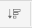
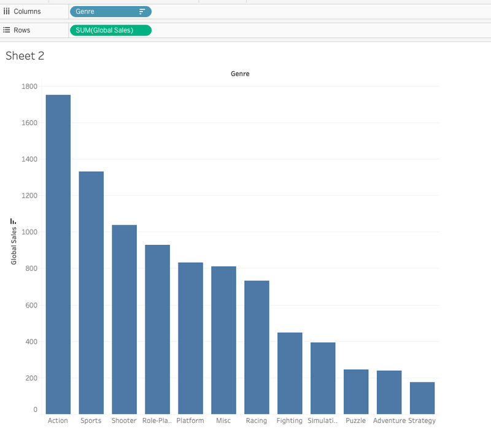
Filters: הצגה של חלק מהערכים
פילטר מורה ל-Tableau להציג רק ערכים נבחרים של שדה. שדה נגרר אל המדף Filters, ונפתחת חלונית שבה בוחרים מה להשאיר. השאלה לבדיקה: האם הערך של Action בשנים 2007 עד 2013 יציב או משתנה?
- גיליון חדש. יש לגרור את Year אל Columns ואת Global Sales אל Rows.
- יש לבדוק את הצבע של ה-Pill Year. הרצוי הוא עמודות, אחת לכל שנה, כלומר Discrete (כחול). אם ה-Pill ירוק, יש ללחוץ על החץ שלו ולבחור Discrete.
- יש לגרור את Genre אל המדף Filters. בלשונית הראשונה (General) יש ללחוץ None, לסמן רק Action וללחוץ OK.
- יש לגרור את Year מה-Data pane אל המדף Filters. צורת החלונית תלויה בסוג של Year אצלכם. אם מופיע Range of values, יש להזין 2007 עד 2013. אם מופיעה רשימה עם תיבות סימון, יש לסמן 2007 עד 2013. לאחר מכן OK.
התוצאה: עמודות של 2007 עד 2013 בלבד, כולן של Action. אם מופיעה גם עמודה בשם Null, ההסבר בהמשך. אם התפריט או החלונית אצלכם שונים, יש לפעול לפי הכיתוב על המסך ולבחור את האפשרות המקבילה.


נקודת בדיקה (Checkpoint): כל משתתף מקליד בצ׳אט, וגם בתיבה כאן, את הערך של Action בשנת 2013. הערך מופיע בחלונית כשמרחפים מעל העמודה של 2013. ערך שונה מצביע על שלב שבוצע אחרת.
ערכי Null ו-Include Null Values: בקובץ יש 271 משחקים בלי שנה (בעמודה Year כתוב בהם N/A). אם Year נטען כמספר, Tableau מתייחס אליהם כ-Null, כלומר ערך חסר. בחלונית פילטר של טווח מופיעה תיבה בשם Include Null Values, שקובעת אם המשחקים בלי שנה יישארו בתצוגה או יוסרו. יש לסמן את התיבה, לבטל את הסימון ולבחון את השינוי בכל מצב. אם הופיעה עמודה Null, זה מקורה.
חשוב: פילטר אינו מוחק. שאר הז׳אנרים והשנים נשארים בקובץ. הם אינם מוצגים בגיליון הזה. כמו כן, הוצאה של שדה מ-Rows או מ-Columns אינה סינון: הנתונים נשארים, ורק מבנה התרשים משתנה.
סינון מהיר: Exclude
אפשר להוציא ערך בלי לפתוח חלונית. הפעולה נקראת סינון מהיר. התרגול מתבצע בגיליון הממוין של Genre ו-Global Sales.
- קליק ימני על העמודה של Action (ב-Mac: Control + קליק), ובתפריט לבחור Exclude. במדף Filters נוסף Genre אוטומטית: Tableau יצר פילטר רגיל.
- יש לבטל: Ctrl+Z (ב-Mac: Cmd+Z). Action חוזר, כי הנתונים אינם נמחקים. בתפריט יש גם Keep Only, הפעולה ההפוכה: משאיר רק את מה שסומן.
אם התפריט אצלכם שונה, יש לפעול לפי הכיתוב על המסך ולבחור את האפשרות המקבילה. פילטר חל על הגיליון שבו נוצר. כדי שהצופה בתרשים יסנן בעצמו, בתפריט של ה-Pill של הפילטר קיימת האפשרות Show Filter.
Top N: הצגת N הערכים הגבוהים או הנמוכים
כשהמטרה היא להציג, למשל, את חמשת הערכים הנמוכים ביותר, אין צורך לבחור ערכים ידנית. בחלונית הפילטר יש לשונית נפרדת, Top, והפעולה נקראת Top N (או Bottom N): משאירים רק את N הערכים הגבוהים או הנמוכים ביותר לפי מדד. הרציונל: הצגת המוצרים הנמכרים פחות, כדי לבחון איך לשפר אותם. המרצה מדגים, והצעדים ליישום:
- בגיליון חדש (Genre אל Columns, JP Sales אל Rows), יש לגרור את Genre אל Filters ולעבור ללשונית Top.
- יש לבחור By field, Bottom, 5, JP Sales (עם Sum), ואז OK.
שימוש מקצועי: דוחות רבים מנוסחים כבקשה להצגה חלקית: הרבעון האחרון בלבד, חמשת הלקוחות הגדולים, או הדוח בלי סניף חריג. Top ופילטר טווח עונים על בקשות כאלה. מומלץ לציין ליד התרשים מה סונן, כדי שהקורא לא יניח שמוצגים כל הנתונים.
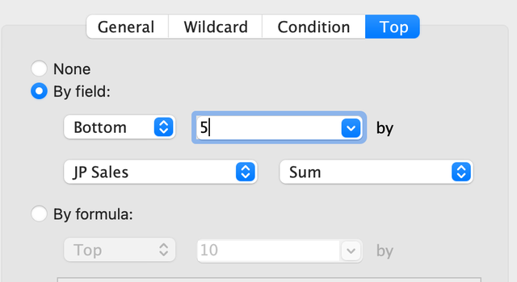
יישום: שאלה עסקית (10 דקות, עבודה אישית). כל משתתף בוחר אחד משני התדריכים ובונה את התרשים בעצמו. הרציונל: Top N ומיון הופכים תרשים רחב לתשובה ממוקדת לשאלה עסקית.
- תדריך א, פלטפורמות: חברת הפצה מתכננת להתמקד בפלטפורמות המובילות במכירות העולמיות. בגיליון חדש יש לגרור את Platform אל Columns ואת Global Sales אל Rows, ולהוסיף פילטר Top 5 לפי Global Sales. התוצאה: חמש עמודות, העליונה מהן PS2.
- תדריך ב, יפן: מנהל באזור יפן רוצה לראות רק את שלושת סוגי המשחק המובילים. בגיליון חדש יש לגרור את Genre אל Columns ואת JP Sales אל Rows, ולהוסיף פילטר Top 3 לפי JP Sales. התוצאה: שלוש עמודות, והנמוכה מהן היא העמודה השלישית.
- בשני התדריכים: למיין מהגבוה לנמוך, ולהקליד בנקודת הבדיקה המתאימה את הערך שנקרא.
- משפט אחד בצ׳אט: שאלה, תרשים וממצא. למשל: ״שאלה: איזו פלטפורמה מובילה. תרשים: עמודות לפי Platform. ממצא: ...״
- מי שנתקע מסמן דגל אדום ועוזר יגיע.
נקודת בדיקה (Checkpoint): משתתף שבחר בתדריך א מקליד בצ׳אט את הערך של העמודה העליונה. ערך שונה מצביע על שלב שבוצע אחרת.
נקודת בדיקה (Checkpoint): משתתף שבחר בתדריך ב מקליד בצ׳אט את הערך של העמודה השלישית. ערך שונה מצביע על שלב שבוצע אחרת.
אנליסטית סיננה בגיליון א׳ את Genre כך שנשארו רק Action ו-Sports. הפילטר נוצר בהגדרות ברירת המחדל. לצוות היא כתבה: ״מחקתי את שאר הז׳אנרים מהנתונים״. גיליון ב׳, שנוצר קודם, מציג את כל הז׳אנרים. מה הניסוח המדויק?
- הניסוח נכון, וגיליון ב׳ מציג את כולם כי עדיין לא רועננו נתוני הגיליון
- הניסוח שגוי: הפילטר חל אוטומטית על כל הגיליונות, ולכן גיליון ב׳ אמור להציג רק שני ז׳אנרים
- הניסוח שגוי: הנתונים לא נמחקו. הפילטר הסתיר ערכים בגיליון א׳ בלבד, ולכן גיליון ב׳ מציג את כולם והקובץ המקורי לא השתנה
- הניסוח נכון: סינון מוחק את הערכים מהקובץ המקורי, ולכן אי אפשר לשחזר אותם
חלוקת זמן
| שעה | מה קורה |
|---|---|
| 2:02 עד 2:04 | הרציונל ו-Sort (2 דק׳) |
| 2:04 עד 2:11 | Filters, Include Null Values בקצרה, נקודת בדיקה CP4 (תרגול מודרך, 7 דק׳) |
| 2:11 עד 2:13 | Exclude וביטול (2 דק׳) |
| 2:13 עד 2:15 | Top N: הדגמה של המרצה בלבד (2 דק׳) |
| 2:15 עד 2:25 | יישום אישי, 10 דקות. נקודות בדיקה CP4p או CP4j. בסיום מתחילה הפסקה 2 |
מה אומרים
- תרשים עונה על שאלה אחת. עכשיו מחליטים מה להציג.
- מיון הופך תרשים לתשובה: הוא מראה מי מוביל.
- פילטר מסתיר ואינו מוחק. Action יוצא מהתצוגה, ואינו נמחק מהקובץ.
- Include Null Values: יש 271 משחקים בלי שנה. יש לסמן את התיבה, לבטל את הסימון ולבחון את השינוי בכל מצב.
- הוצאה של שדה מ-Rows אינה סינון. סינון נעשה ב-Filters או ב-Exclude.
- היישום אישי. מי שנתקע מסמן דגל אדום ועוזר יגיע.
מה מדגימים
- Genre מול Global Sales, מיון מהגבוה לנמוך. הצפוי: Action 1,751.18 ראשון, Strategy 175.12 אחרון.
- גיליון חדש: Year (Discrete) ב-Columns, Global Sales ב-Rows. Genre אל Filters: None ואז Action. Year אל Filters: טווח 2007 עד 2013 (או רשימה, בהתאם לסוג). הצפוי: העמודות 2007 עד 2013 בלבד, וייתכן עמודת Null אם Include Null Values מסומן.
- הערכים של Action בשנים 2007 עד 2013, להשוואה: 106.5, 136.4, 139.4, 117.6, 119.0, 122.0, 125.2. CP4 הוא 125.2.
- חזרה לגיליון הראשון: קליק ימני על Action, Exclude, הצבעה על Genre במדף Filters. Ctrl+Z (Cmd+Z). Action חוזר.
- גיליון חדש: Genre, JP Sales, פילטר Top, לשונית Top, By field, Bottom 5, JP Sales. הצפוי: Shooter (38.3), Strategy (49.5), Adventure (52.1), Racing (56.7), Puzzle (57.3).
צ׳אט, סקרים ודגלים
- נקודת בדיקה CP4: כל משתתף מקליד בצ׳אט את הערך של Action ב-2013 (125.2). אם הערכים זהים בכל העמודות, ייתכן שהפילטר נוצר בגיליון אחר. הערך 1,751.18 מצביע על כך ש-Year אינו ב-Columns. הערך 368.11 הוא הערך של כל הז׳אנרים ב-2013 (פילטר Genre אינו פעיל).
- נקודות בדיקה ביישום: CP4p (1255.6, העמודה העליונה של Top 5 פלטפורמות) או CP4j (135.4, העמודה השלישית של Top 3 ביפן).
- היישום נמשך 10 דקות. הודעה לכולם בדקה החמישית ובשתי הדקות האחרונות.
- משתתף שהקליד את הערך בנקודת הבדיקה ושלח משפט אחד (שאלה, תרשים, ממצא) מסמן דגל ירוק.
עוזרים
- עוזר מצטרף למשתתף רק כשהוא מסמן דגל אדום.
- בין 2:04 ל-2:11: לאתר מי תקוע בחלונית הפילטר של Year (רשימה מול טווח) ומי עם פילטר שאינו נראה.
- חמש הפלטפורמות המובילות לפי Global Sales (תדריך א): PS2, X360, PS3, Wii, DS. שלושת הז׳אנרים המובילים ביפן (תדריך ב): Role-Playing, Action, Sports.
אם מאחרים או מקדימים
- מאחרים: לדלג על ההדגמה של Exclude ועל שינוי השמות (הנושאים נשארים בשאלת ההבנה), ולקצר את היישום ל-8 דקות.
- מקדימים: להוסיף Show Filter על Genre. מי שסיים לפני הזמן ממשיך לתרשים נוסף מאותו בלוק (למשל Other Sales לפי Genre: Action, 187.38).
הפסקה 2: 15 דקות
עד כאן נלמדו ממד ומדד, Marks, מיון, סינון ותרגול אישי. אחרי ההפסקה, ב-2:40, מתחיל קובץ נתונים חדש.
- שמירה מקומית: יש לשמור את העבודה בתיקייה Vizu, בשם
Vizu_checkpoint_2_<כינוי>, כקובץ twbx (File > Save As). אין לפרסם בשלב זה. אם התפריט אצלכם שונה, יש לפעול לפי הכיתוב על המסך ולבחור את האפשרות המקבילה. - Tableau נשאר פתוח. לאחר ההפסקה ממשיכים מאותו מקום.
- נקודת בדיקה חסרה: משתתף שלא עבר את CP3 או את CP4 כותב בצ׳אט את מספר הנקודה, ועוזר יעבור איתו על השלבים במהלך ההפסקה. המשך השיעור אינו תלוי בנקודות אלה.
- כרטיס דקה (Minute Paper): כל משתתף כותב בצ׳אט שתי שורות: דבר אחד שהובן היום, ודבר אחד שלא הובן. המרצה והעוזרים קוראים את הכרטיסים בזמן ההפסקה.
- מנוחה: מומלץ לקום, לשתות ולהרחיק את המבט מהמסך. ההפסקה אינה מיועדת רק לתיקונים.
- הבלוק הבא: קובץ נתונים חדש, Scoop & Go, ואותו תהליך עבודה, לפי רשימת צעדים ממוספרת ובלי הדגמה מלאה. הקובץ scoop_sales_2024_2025.xlsx אמור להימצא בתיקייה Vizu. אם הוא חסר, יש להוריד אותו כעת.
חלוקת זמן
| שעה | מה קורה |
|---|---|
| 2:25 עד 2:27 | הצגת הרשימה: שמירה, Tableau נשאר פתוח, CP3 ו-CP4 חסרות, כרטיס דקה בצ׳אט |
| 2:27 עד 2:37 | העוזרים עוברים על משתתפים שחסרה להם נקודת בדיקה. המרצה קורא כרטיסי דקה |
| 2:37 עד 2:40 | הודעה: חוזרים בעוד 3 דקות. משתתף שחזר ושמר את העבודה מסמן דגל ירוק |
מה אומרים
- ההפסקה היא 15 דקות. יש לשמור עכשיו, בלי לפרסם, ולהשאיר את Tableau פתוח.
- משתתף שחסרה לו נקודת בדיקה כותב בצ׳אט CP3 או CP4, ועוזר יעבור איתו על השלבים.
- כרטיס דקה בצ׳אט: דבר אחד שהובן ודבר אחד שלא הובן. המרצה קורא אותם בהפסקה.
- לאחר ההפסקה מתחיל קובץ חדש, באותו תהליך עבודה. בבלוק הבא יתברר אם התהליך הופנם.
מה מדגימים
- אין הדגמה. מקריאים את סעיף השמירה פעם אחת, כולל שם קובץ מלא.
- עוברים על כרטיסי הדקה ומסמנים שתי שאלות שחוזרות, כדי לפתוח בהן את הבלוק הבא.
צ׳אט, סקרים ודגלים
- כרטיס דקה בצ׳אט. עוזר אחד אוסף את השורות ״מה לא הובן״ ומעביר אותן למרצה.
- בסוף ההפסקה: כל משתתף שחזר ושמר את העבודה מסמן דגל ירוק.
עוזרים
- עדיפות ראשונה: משתתפים שחסרה להם CP3 או CP4, ומי שהפרסום הראשון שלו לא הצליח.
- עוזר פנוי בודק שכל מי שחזר מצא את הקובץ scoop_sales_2024_2025.xlsx בתיקייה Vizu.
אם מאחרים או מקדימים
- מאחרים: לקצר ל-10 דקות. השמירה וכרטיס הדקה נשארים, והתיקונים עוברים לתחילת הבלוק הבא.
- מקדימים: אפשר להתחיל את הבלוק הבא כמה דקות מוקדם, רק אם כל הדגלים ירוקים.
קובץ חדש: Scoop & Go
22 דק׳הרציונל: בשלבים הקודמים החיבור לקובץ הודגם לפני שבוצע. בשלב זה החיבור מתבצע ללא הדגמה, כמו בעבודה בפועל, שבה קובץ חדש מגיע בלי הנחיה. ביצוע עצמאי של אותו תהליך מראה שנלמד תהליך עבודה ולא רצף של לחיצות. התהליך: להתחבר, לספור רשומות, לבדוק את השדות, ורק אחר כך לבנות.
הרקע והקובץ
Scoop & Go היא רשת גלידריות ישראלית דמיונית. הרשת, הסניפים והמספרים בדויים, והם נבנו לצורך השיעור. מנכ״ל הרשת מציג שלוש שאלות: מתי הרשת מוכרת, איפה היא מוכרת, ומה השפעת המבצעים על הרווח. בבלוק הנוכחי עונים על השתיים הראשונות, ועל השלישית בבלוק הבא.
הקובץ נמצא בתיקייה Vizu שבחבילת הנתונים. אם הוא חסר, יש להוריד אותו כאן. קובץ ה-CSV הוא גיבוי: הוא כולל רק את הגיליון Sales, והחיבור אליו נעשה דרך Text file.
בקובץ ה-Excel שני גיליונות. Sales הוא הגיליון הראשי, ובו שורה אחת לכל הזמנה: 6,575 שורות בסך הכול. Branches הוא רשימת הסניפים, והוא נדרש רק בבלוק הבונוס על Join.
| שדה | תיאור |
|---|---|
| Order Date, Order Hour | תאריך ההזמנה, והשעה ביום (מספר שלם) |
| Branch, City, Region | הסניף, העיר והאזור |
| Channel | אופן ההזמנה: Walk-in (הגעה לסניף), Delivery (משלוח), App (אפליקציה) |
| Category, Item | סוג המוצר (כוסות, גביעים, סנדיי, ארטיקים, שתייה) והמוצר עצמו |
| Quantity, Unit Price | כמות היחידות שהוזמנו, ומחיר של יחידה אחת |
| Discount | אחוז ההנחה כשבר של 1 (0.1 הוא עשרה אחוז) |
| Sales | ההכנסה מההזמנה, לאחר ההנחה |
| Cost, Profit | העלות והרווח (Profit שווה ל-Sales פחות Cost) |
הערה: בחלונית Data של Tableau שמות השדות מופיעים עם רווח: Order Date ולא Order_Date. בנוסחאות כותבים את השם כפי שהוא מופיע על המסך.
חיבור עצמאי לקובץ
שלב זה מתבצע ללא הדגמה. ההוראות הממוספרות הן החומר היחיד, והן קצרות במכוון. התהליך זהה לתהליך בבלוק של vgsales. במקרה של קושי יש לחזור לבלוק a2. ההבדל היחיד הוא סוג הקובץ: Excel.
- יש להתחיל בחוברת עבודה חדשה: בתפריט File לבחור ב-New (ב-Mac: Cmd+N). חוברת העבודה של vgsales נשארת פתוחה בחלון נפרד, והיא אינה בשימוש בבלוק זה. אם התפריט אצלכם שונה, יש לפעול לפי הכיתוב על המסך ולבחור את האפשרות המקבילה.
- בחוברת החדשה, תחת Connect, יש לבחור ב-Microsoft Excel. הקובץ הוא קובץ Excel, ולכן לא נבחר Text file. יש לבחור את הקובץ scoop_sales_2024_2025.xlsx מהתיקייה Vizu.
- בעמוד Data Source מופיעה בצד רשימה של גיליונות: Sales ו-Branches. בשלב זה אין טבלה בעמוד, וזה תקין.
- יש לגרור את Sales בלבד אל האזור הגדול והריק שבמרכז (Canvas). Branches נשאר ברשימה.
- התוצאה: שורות הנתונים וכל השדות מוצגים. יש ללחוץ על Sheet 1 בתחתית המסך. בחוברת החדשה זהו גיליון ריק.
- בתחתית רשימת המדדים (Measures) בחלונית Data יש שדה ספירה. בגרסאות חדשות שמו הוא שם הטבלה ואחריו (Count), כלומר Sales (Count). בגרסאות ישנות שמו Number of Records. אם התפריט אצלכם שונה, יש לפעול לפי הכיתוב על המסך ולבחור את האפשרות המקבילה. יש ללחוץ פעמיים על שדה הספירה ולקרוא את הערך שמוצג בגיליון.
נקודת בדיקה (Checkpoint): כל משתתף מקליד בצ׳אט (וגם בתיבה כאן) את מספר הרשומות המוצג אצלו עבור הגיליון Sales. ערך שונה מצביע על שלב שבוצע אחרת.
תאריכים: חלקי תאריך בדידים ורציפים
ב-vgsales Year היה שדה של שנה בלבד. בקובץ הנוכחי יש תאריך מלא, ו-Tableau מפרק אותו לחלקים: Year (שנה), Quarter (רבעון), Month (חודש) ו-Day (יום). ליד Order Date בחלונית Data אמור להופיע אייקון של לוח שנה. יש לבדוק את האייקון ולא להניח.
כל חלק של תאריך זמין בשתי צורות:
| discrete חודש בדיד | continuous חודש רציף | |
|---|---|---|
| התוצאה | כותרות: January, February, March וכן הלאה | ציר זמן אחד, מהתאריך הראשון עד האחרון |
| ינואר של שתי שנים | מתמזגים לכותרת אחת של ינואר | שתי נקודות נפרדות על הציר |
| שאלה מתאימה | באילו חודשים בשנה המכירות גבוהות יותר | כיצד המכירות משתנות לאורך הזמן |
כלל Tableau: בדיד נותן כותרות, רציף נותן ציר. ב-vgsales הכלל של הקורס היה: רציף נותן קו, בדיד נותן עמודות. בתאריכים סוג התרשים ש-Tableau בוחרת עשוי להשתנות, ולכן יש לבדוק מה היא ציירה: ההבחנה המהימנה היא כותרות מול ציר, ושתי השנים מתמזגות רק בצורה הבדידה.
- בגיליון Sheet 1 יש להסיר תחילה את שדה הספירה מ-Rows (גרירה החוצה, או Ctrl+Z, ב-Mac Cmd+Z), כדי שהגיליון יתחיל ריק.
- יש לגרור את Order Date אל Columns, וב-Pill שנוצר לבדוק מה כתוב בו ומה צבעו, כחול או ירוק.
- יש ללחוץ על החץ של ה-Pill. בתפריט מופיעות כמה רשימות של חלקי תאריך (Year, Quarter, Month, Day), המופרדות בקו. יש לבחור ב-Month מהרשימה שבה ה-Pill הופך לירוק (רציף), ולוודא את הצבע. אם התפריט אצלכם שונה, יש לפעול לפי הכיתוב על המסך ולבחור את האפשרות המקבילה.
- ה-Pill אמור להיות ירוק. יש לגרור את Sales אל Rows. התוצאה: ציר זמן אחד לאורך כל התקופה, נקודה לכל חודש. אם Tableau ציירה קו, זה תקין. אם ציירה עמודות על ציר הזמן, זה תקין גם כן.
- יש לשנות את שם הגיליון ל-Sales over time (לחיצה כפולה על הלשונית). את ההשוואה לחודש בדיד (Pill כחול) מציג המרצה: שתים עשרה כותרות, ושתי השנים מתמזגות בכל כותרת.
אזהרה: אותו תרשים עם חודש בדיד נראה תקין, אך הוא מערבב שתי שנים. תרשים תקין מבחינה ויזואלית עלול להיות שגוי. לכן יש לוודא בכל תרשים של תאריך איזה חלק בתאריך נבחר, ובאיזו צורה.
יישום: מנכ״ל הרשת מבקש לדעת איזה סניף מוביל במכירות. זמן: 3 דקות. הרציונל: השוואה בין קטגוריות נעשית בעמודות ממוינות.
- גיליון חדש (New Sheet), בשם Sales by branch.
- יש לגרור את Branch אל Rows ואת Sales אל Columns, ולמיין מהגדול לקטן בכפתור המיון בסרגל הכלים.
- התוצאה: תרשים עמודות אופקי, והסניף המוביל בראש. כאן עוצרים ומקלידים את CP6.
- רק לאחר מכן: Category אל Color בכרטיס Marks (פילוח לפי צבע הוא תמיד Marks > Color, ולא שדה על Rows).
נקודת בדיקה (Checkpoint): כל משתתף מקליד בצ׳אט (וגם בתיבה כאן) את הערך של העמודה הארוכה ביותר בגיליון Sales by branch, לפני הוספת הצבע. הערך מופיע ב-tooltip כשמרחפים מעל העמודה. ערך שונה מצביע על שלב שבוצע אחרת.
יישום: צוות השיווק מבקש להבין איך הלקוחות מזמינים. כל משתתף בונה תרשים שעונה על השאלה. זמן: 6 דקות, עבודה אישית. הרציונל: אותו תהליך עבודה, שדה אחר, שאלה אחרת.
- גיליון חדש, ושם באנגלית לפי השאלה. שאלת ברירת המחדל: איך הלקוחות מזמינים, בשדה Channel. השדה נמצא ב-Columns, ו-Sales ב-Rows.
- התוצאה: תרשים עמודות עם שלוש כותרות, אחת לכל ערוץ.
- משתתף שסיים מוקדם בוחר שאלה נוספת: באילו ימים בשבוע מוכרים, בחלק של Order Date שמציג את היום בשבוע (בתפריט ה-Pill של Order Date: Weekday, ואם הוא אינו ברשימה הראשית, יש לחפש תחת More), או באיזו שעה ביום מוכרים, בשדה Order Hour.
- כל משתתף כותב בצ׳אט משפט אחד: מה מוצג בתרשים, ומה בו בלתי צפוי.
הערה לגבי Order Hour: השדה הוא מספר. יש לבדוק את האייקון ואת הצבע: אם הוא מופיע בין המדדים, כדי לקבל כותרות יש להמיר אותו ל-Dimension ולהגדיר אותו Discrete.
ערכי בדיקה עצמית, לפתיחה לאחר בניית התרשים
Channel: עמודת App 36,957.8, עמודת Delivery 35,095.2. יום בשבוע: עמודת שבת 51,979.5. שעה: עמודת שעה 21 32,727.6. ערך שונה מצביע על שלב שבוצע אחרת: יש לבדוק את ה-Pill (צבע וסוג) ואת הסימון SUM(Sales).
שימוש מקצועי: בקמעונאות ובמזון, ניתוח מכירות נפתח בדרך כלל באותם צעדים: חיבור הקובץ, ספירת השורות, בדיקה שעמודת התאריך מזוהה כתאריך, ורק אחר כך שאלות. בהכנת דוח חודשי, הבחירה בין חודש בדיד (השוואה בין חודשי השנה) לחודש רציף (מגמה לאורך זמן) נקבעת לפי השאלה.
שני אנליסטים בנו תרשים מכירות חודשי מאותו שדה Order Date, שמכיל שנתיים של נתונים. אצל האחד התרשים כולל שתים עשרה כותרות, ינואר עד דצמבר. אצל השני התרשים נפרש על ציר זמן אחד ארוך. איזו טענה נכונה?
- שניהם בחרו חלק רציף של התאריך, וההבדל בין התרשימים נובע רק מסוג ה-Marks שנבחר
- הציר הארוך שגוי, כי חודש בדיד הוא הצורה היחידה שמציגה תאריך נכון
- האחד בחר Month בדיד (Pill כחול), והשני Month רציף (Pill ירוק). רק בתרשים של השני אפשר לבדוק אם המכירות עלו משנה לשנה, כי בראשון אותו חודש משתי השנים מתמזג
- האחד בחר Month רציף (Pill ירוק), והשני Month בדיד (Pill כחול)
חלוקת זמן
| שעה | דק׳ | מה קורה | מצב |
|---|---|---|---|
| 2:40 עד 2:42 | 2 | הרקע, שלוש שאלות המנכ״ל, מיקום הקובץ בתיקייה Vizu | D |
| 2:42 עד 2:48 | 6 | חוברת חדשה (File, New), חיבור עצמאי לפי ההוראות הממוספרות, ללא הדגמה. העוזרים עוברים בין המשתתפים. CP5 ב-2:48 | H, C |
| 2:48 עד 2:53 | 5 | הסרת הספירה מ-Rows. תאריכים: Month רציף (ירוק) בביצוע במקביל. החודש הבדיד (כחול) מוצג בהדגמה של המרצה בלבד | D, F |
| 2:53 עד 2:56 | 3 | יישום: Sales by branch עד המיון. CP6 | F, C |
| 2:56 עד 3:02 | 6 | יישום אישי: שאלת Channel (ברירת מחדל). בסיום: שני מתנדבים כותבים בצ׳אט משפט אחד | H |
מה אומרים
- ״בשלב זה אין הדגמה של החיבור. ההוראות הממוספרות הן החומר היחיד. מי שמגיע לבד לערך 6,575 ביצע את התהליך נכון.״
- ״הרציונל: ביצוע עצמאי של תהליך שהודגם קודם מראה שהתהליך נלמד.״
- ״תאריך אינו מספר. Tableau מפרק אותו לשנה, רבעון, חודש ויום, וכל חלק זמין בשתי צורות: בדיד ורציף.״
- ״כלל Tableau: בדיד נותן כותרות, רציף נותן ציר. צבע ה-Pill מצביע על הצורה: כחול בדיד, ירוק רציף. בתאריכים יש לבדוק מה Tableau ציירה, כי סוג התרשים עשוי להשתנות.״
- ״אותו תרשים עם חודש בדיד נראה תקין, אך הוא מערבב שתי שנים. תרשים תקין מבחינה ויזואלית עלול להיות שגוי.״
- ״הממצאים אינם נמסרים מראש. בסיום כל משתתף כותב בצ׳אט משפט אחד: מה מוצג בתרשים, ומה בו בלתי צפוי.״
- ״מי שנתקע מסמן דגל אדום ועוזר יגיע.״
מה מדגימים
- File > New. Connect > Microsoft Excel > הקובץ. גוררים את Sales בלבד. Sheet 1. שדה הספירה Sales (Count) מציג 6,575 (ההצגה מתבצעת רק לאחר סגירת CP5). מסירים את הספירה מ-Rows.
- Order Date אל Columns. מציגים את צבע ה-Pill, פותחים את התפריט, בוחרים Month מהרשימה שבה ה-Pill הופך לירוק (רציף). Sales אל Rows. נקודה לכל חודש לאורך שנתיים. שיא הקו: שנה 2025, חודש 8, 23,259.9. הערך אינו נמסר למשתתפים.
- מחליפים לחודש בדיד: שתים עשרה כותרות, ושתי השנים מתמזגות. מציינים מה Tableau ציירה (קו או עמודות) ושההבחנה היא כותרות מול ציר. חוזרים לחודש רציף.
- יישום Sales by branch: Branch אל Rows, Sales אל Columns, מיון יורד. בראש: Tel Aviv Dizengoff, 44,194.1. לאחר מכן Category אל Color. אם נשאלת שאלה על מספר הסניפים (9): אחד מהם הוא סניף פופ-אפ של הקיץ (139 שורות בלבד).
- ממצאים שעשויים להתגלות ביישום של שאלת Channel (למרצה בלבד, ללא חשיפה מראש):
- עונתיות: הקיץ גבוה בהרבה מהחורף. בקו הרציף של 2025: חודש 8 23,259.9 לעומת חודש 2 4,097.0. אילת שטוחה יותר. הערכים הבאים הם סכומי שתי השנים לכל חודש קלנדרי (חודש בדיד): אילת, אוגוסט 3,693.2 ודצמבר 1,857.6. ירושלים, אוגוסט 5,937.3 ודצמבר 1,413.3.
- ימים בשבוע: שבת (51,979.5) ושישי (48,399.7) גבוהים משאר הימים.
- שעות: שיא בערב, למשל בשעה 21: 32,727.6.
- ערוצים: חלק האפליקציה במספר ההזמנות (שורות) גדל מ-0.11 ל-0.201 (שברים של 1). מספר ההזמנות באפליקציה: 318 ב-2024 ו-739 ב-2025. חלק האפליקציה בהכנסות נמוך מעט יותר בשתי השנים, ובדיקה בצג תיתן את הערכים המדויקים.
- באר שבע יורדת בין 2024 ל-2025 (מ-11,108.8 ל-7,688.4, שינוי של -30.8 אחוז), בזמן שהרשת גדלה ב-21.2 אחוז. גידול הרשת כולל שני סניפים שלא פעלו ב-2024: רחובות (2025-06-01) והפופ-אפ. בסניפים שפעלו בשתי השנים הגידול נמוך בהרבה.
- אם המשתתפים אינם מגיעים לממצא, הכוונה אחת מספיקה: להשוות כל סניף לאורך שנתיים. הממצאים ממשיכים בבלוק הבא ובדשבורד.
צ׳אט, סקרים ודגלים
- CP5 ב-2:48. הקוד הנכון 6575. הערך 6576 מצביע על שורת כותרת שנספרה. הערך 6574 מצביע על פילטר או חיבור שגוי. הערך 16,598 מצביע על חוברת vgsales שנשארה פתוחה.
- בדיקה בצ׳אט לפני ההדגמה: כל משתתף כותב 1 אם ליד Order Date מופיע אייקון של לוח שנה, ו-2 אם לא. משתתף שכתב 2 מקבל עוזר.
- CP6 ב-2:55. הקוד הנכון 44,194.1 (Tel Aviv Dizengoff). הערך 236,820.9 (סכום כל הרשת) מצביע על כך ש-Branch אינו ב-Rows.
- דגלים: משתתף שסימן דגל אדום בזמן החיבור העצמאי מקבל עוזר לפני תחילת היישום.
עוזרים
- עוזר א: משתתפים שלא הגיעו לטבלה (חוברת חדשה, הקובץ, Microsoft Excel במקום Text file, גרירה של Sales).
- עוזר ב: ספירות שגויות ב-CP5, ושני גיליונות שחוברו בטעות.
- עוזר ג: שדה Order Date שאינו תאריך (Abc), ו-Pill כחול כשנדרש ירוק.
- עוזר ד: מצטרף רק למשתתפים שסימנו דגל אדום.
אם מאחרים או מקדימים
- איחור: מדלגים על ההדגמה של החודש הבדיד, וגם על Category ב-Color.
- הקדמה: משתתף שסיים בוחר שאלה נוספת (יום בשבוע או שעה), או יישום מהבלוק ״יישומים נוספים״.
- בסיום (3:02): שני מתנדבים כותבים בצ׳אט משפט אחד על מה שנמצא. זהו הפתיח של הבלוק הבא.
שדה מחושב (Calculated Field)
13 דק׳הרציונל: בקובץ יש Quantity, Unit Price ו-Discount, אך אין שדה שמציג כמה כסף ניתן בהנחות. כאשר שדה חסר, אין להוסיף עמודה בקובץ המקורי. השדה נבנה ב-Tableau מתוך שדות קיימים, והוא נקרא שדה מחושב.
הרקע: שאלת המנכ״ל על המבצעים
המנכ״ל כותב: ״במהלך שנתיים הופעלו מבצעים. נדרש לדעת כמה כסף ניתן בהנחות, ומה השפעתן על הרווח.״ בקובץ קיימת העמודה Discount, אך אין עמודה שמציגה את סכום ההנחה. גם Sales אינה מספקת את הנתון, משום שהיא כבר מחושבת לאחר ההנחה.
הנוסחה: כמות כפול מחיר ליחידה כפול אחוז ההנחה. Tableau מחשב אותה בכל שורה בנפרד (חישוב ברמת שורה), ורק לאחר מכן מסכם את התוצאות (SUM). דוגמה לשלוש שורות:
| Quantity | Unit Price | Discount | הנוסחה בכל שורה | התוצאה |
|---|---|---|---|---|
| 2 | 20 | 0.5 | 2 * 20 * 0.5 | 20 |
| 3 | 10 | 0.1 | 3 * 10 * 0.1 | 3 |
| 1 | 16 | 0 | 1 * 16 * 0 | 0 |
| SUM על שלוש השורות | 23 | |||
יצירת שדה מחושב
- יש ללחוץ קליק ימני (ב-Mac: Control + קליק) על שדה כלשהו בחלונית Data, לבחור ב-Create ואז ב-Calculated Field.
- בשורה העליונה של החלון יש להקליד את השם Discount Amount, ובאזור הנוסחה להקליד או להעתיק (שמות שדות נכתבים בסוגריים מרובעים):
Tableau מציע שמות שדות בזמן ההקלדה, וניתן לבחור מהרשימה. השם בחלונית Data הוא Unit Price עם רווח. אם אצלכם הוא מופיע עם קו תחתון, יש לכתוב אותו כפי שהוא מופיע אצלכם.
[Quantity] * [Unit Price] * [Discount] - בתחתית החלון אמורה להופיע ההודעה The calculation is valid, והיא מציינת שהנוסחה כתובה נכון. יש ללחוץ OK. התוצאה: שדה חדש בחלונית Data עם אייקון =#.
- שגיאה מכוונת: יש לערוך את השדה (קליק ימני, Edit), לשנות אות אחת בשם, למשל [Unit Prise], ולקרוא את הודעת השגיאה שמופיעה במקום The calculation is valid. ההודעה מצביעה על מקום הבעיה. יש לתקן וללחוץ OK.
- יש לפתוח גיליון חדש (New Sheet) בשם Discount total, ורק בו לגרור את Discount Amount אל Rows. אם בגיליון יש שדה נוסף ב-Rows או ב-Columns, יתקבל ערך לכל כותרת ולא הסכום הכולל. Tableau מסכם את השדה ל-SUM באופן אוטומטי. התוצאה: עמודה אחת, והערך מופיע ב-tooltip כשמרחפים מעליה.
חשוב: The calculation is valid מציינת רק שהנוסחה כתובה נכון, ולא שהחישוב מחשב את מה שנדרש. נוסחה תקינה יכולה לחשב נתון אחר מהמבוקש. לכן יש נקודת בדיקה.


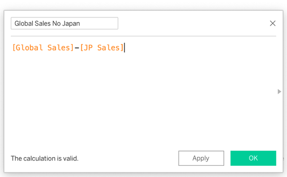
נקודת בדיקה (Checkpoint): כל משתתף מקליד בצ׳אט (וגם בתיבה כאן) את הערך של SUM(Discount Amount) על כל הנתונים, כפי שהוא מוצג אצלו. ערך שונה מצביע על שלב שבוצע אחרת, לרוב על נוסחה שנכתבה אחרת.
יישום: המנכ״ל שואל מה השפעת ההנחות על הרווח. נבנה תרשים של רווח (Profit) לפי אחוז ההנחה (Discount), מפולח לפי קטגוריה. זמן: 5 דקות. הרציונל: כדי לבדוק כיצד ההנחה משפיעה על הרווח, ההנחה מוצבת על ציר אחד והרווח על הציר השני.
- גיליון חדש (New Sheet) בשם Profit by discount.
- בחלונית Data יש לבדוק את Discount. אם הוא מופיע בין המדדים, הוא סווג כמדד. יש ללחוץ עליו קליק ימני ולבחור ב-Convert to Dimension. זו אותה בעיה שעלולה להתרחש עם Year בתרשים הראשון.
- יש לגרור את Discount אל Columns. ה-Pill אמור להיות כחול (Discrete), כי נדרשות כותרות. אם ה-Pill ירוק, יש ללחוץ על החץ שלו ולבחור ב-Discrete.
- יש לגרור את Profit אל Rows (SUM(Profit)), ואת Category אל Color בכרטיס Marks.
- התוצאה: עמודה אחת לכל ערך של Discount, מחולקת לקטעים צבעוניים לפי Category (עמודה מוערמת). כל משתתף כותב בצ׳אט משפט אחד: מה מוצג בתרשים, ומה בו בלתי צפוי.
ממצאי התרשים (לפתיחה רק לאחר בניית התרשים)
בקבוצה של Discount 0.5, החלק של Sundaes יורד מתחת לאפס. סך הרווח שלו שם הוא -747.00. באותה הנחה, Cups ו-Cones נשארים עם רווח קטן (199 ו-170). ב-0.5 אין Drinks ו-Sticks: ההנחה הזאת ניתנה רק לשלוש קטגוריות.
הנחה של 0.5 היא הנחה של 50 אחוז על המחיר. התרשים מציג את הרווח בהנחה הזאת, לפי קטגוריה. הרווח השלילי מציין שההכנסה מ-Sundaes בהנחה הזאת קטנה מהעלות שלהם. הנתונים אינם קובעים כיצד המבצע הוגדר (למשל אם נמכרו שתי יחידות במחיר של אחת).
משפט הממצא למנהל: ״בהנחה של 0.5 נשאר רווח קטן ב-Cups וב-Cones, וב-Sundaes יש הפסד.״ המשפט אינו קובע אם ההנחה גם הגדילה את המכירות. זו שאלה לבדיקה נפרדת, והיא דורשת השוואה לתקופה שלפני ההנחה.
השדה והתרשים עונים על שני חלקים בשאלת המנכ״ל: Discount Amount מציג כמה כסף ניתן בהנחות, והתרשים מציג את ההשפעה על הרווח.
למי שסיים: שדה מחושב שני, ביחס ולא בסכום. שם: Profit Margin. נוסחה: SUM([Profit]) / SUM([Sales]). בנוסחה זו מסכמים קודם ומחלקים אחר כך. יש להחליף את Profit ב-Rows בשדה החדש ולהסיר את Category מהצבע. בקבוצה 0.5 מוצג הערך -0.061, ויתכן שיוצג מעוגל לשתי ספרות אחרי הנקודה. הערך שלילי, והוא שבר של 1, ובהכפלה במאה מתקבלים אחוזים.
שימוש מקצועי: בקמעונאות ובמזון בוחנים מבצעים לפי הרווח ולא רק לפי המכירות, משום שמבצע שמגדיל מכירות עלול להפסיד כסף. שדה מחושב מאפשר להוסיף את החישוב החסר בלי לשנות את קובץ המקור.
חלוקת זמן
| שעה | דק׳ | מה קורה | מצב |
|---|---|---|---|
| 3:02 עד 3:03 | 1 | השאלה השלישית של המנכ״ל, ולמה שדה מחושב | D |
| 3:03 עד 3:08 | 5 | בניית Discount Amount, שגיאה מכוונת ותיקון. CP7 ב-3:08 | D, F |
| 3:08 עד 3:13 | 5 | יישום: תרשים Profit by discount (Convert to Dimension, Discrete, Category לצבע) | F, H |
| 3:13 עד 3:15 | 2 | קריאת התרשים בקול, פתיחת הממצאים, משפט הממצא למנהל. מעבר לדשבורד | D, C |
מה אומרים
- ״בנתונים יש כמות, מחיר והנחה, ואין עמודה של כמה כסף ניתן בהנחות. כאשר שדה חסר, הוא נבנה ב-Tableau. הרציונל: השדה נשמר ב-workbook ואינו משנה את הקובץ המקורי.״
- ״שדה מחושב הוא שדה חדש שנבנה מנוסחה. שמות שדות נכתבים בסוגריים מרובעים. Tableau מחשב כל שורה בנפרד, ואחר כך מסכם.״
- ״The calculation is valid מציינת שהכתיבה נכונה, ולא שהחישוב סביר. לכן נדרשת נקודת בדיקה: CP7.״
- ״Discount הוא מספר, אך נדרשות כותרות. התיקון זהה לזה של Year: המרה לממד ובחירה ב-Discrete.״
- ״כל משתתף כותב משפט אחד על מה שמוצג בתרשים. רק לאחר מכן נפתחים הממצאים.״
- ״ב-Mac: Control ולחיצה במקום קליק ימני.״
מה מדגימים
- קליק ימני בחלונית Data, Create, Calculated Field. שם: Discount Amount. נוסחה: [Quantity] * [Unit Price] * [Discount]. The calculation is valid. OK. אייקון =#.
- שגיאה מכוונת: [Unit Prise]. קוראים את הודעת השגיאה. מתקנים.
- גיליון חדש Discount total. Discount Amount אל Rows: עמודה אחת. ה-tooltip אמור להציג 8,234.1.
- גיליון חדש Profit by discount. Discount: Convert to Dimension, Columns, Discrete. Profit אל Rows. Category אל Color. בקבוצה 0.5 החלק של Sundaes מתחת לאפס: -747.00. Cups 199, Cones 170.
- למרצה: Discount 0.5 מופיע רק ב-2025 ורק בימי שלישי. יש 292 שורות כאלה מתוך 777 שורות עם הנחה כלשהי. התרחיש התכנוני הוא מבצע ״2 ב-1 ביום שלישי״, אך הנתונים מראים הנחה של 50 אחוז על כל יחידה, ללא כלל כמות, ולכן אין לטעון שהנתונים מוכיחים מבצע ״2 ב-1״. היום אינו נמסר אלא אם המשתתפים מבקשים לבדוק.
- אם נשאלת שאלה אם ההנחה גם הגדילה את המכירות: התשובה דורשת השוואה בין ימי שלישי ב-2025 לבין ימי שלישי ב-2024. מספר ההזמנות ביום שלישי עלה בשיעור גבוה מזה של הרשת, וההכנסה ביום שלישי עלתה פחות מהרשת. השאלה נשארת פתוחה, והיא אינה חלק מהמשימה.
צ׳אט, סקרים ודגלים
- CP7 ב-3:08. הקוד הנכון 8,234.1. הערך 4,686.5 מצביע על כך ש-Quantity נשכח. הערך 245,055 מצביע על כך ש-Discount נשכח.
- לאחר התרשים, כל משתתף כותב בצ׳אט משפט אחד. יש לאסוף שלוש תשובות לפני פתיחת הממצאים.
- דגלים: משתתף שסימן דגל אדום בזמן בניית הנוסחה מקבל עוזר לפני המעבר לתרשים.
עוזרים
- עוזר א: שגיאות בנוסחה: שמות שדות, קו תחתון במקום רווח, סוגר שלא נסגר.
- עוזר ב: קודים שגויים ב-CP7.
- עוזר ג: Discount נשאר ירוק ומוצג ציר במקום כותרות. Convert to Dimension ואז Discrete.
- עוזר ד: משתתפים שלא מוצאים את Discount Amount בחלונית Data, או שבנו את התרשים בלי Category.
אם מאחרים או מקדימים
- איחור: מדלגים על השגיאה המכוונת ועל התרגול למי שסיים. הנוסחה והתרשים נבנים בביצוע משותף.
- הקדמה: התרגול למי שסיים, Profit Margin. הערך בקבוצה 0.5 הוא -0.061. או יישום מהבלוק ״יישומים נוספים״.
הדשבורד הראשון
22 דק׳הרציונל: שלושה גיליונות נפרדים אינם עונים לבדם על שאלה. דשבורד מרכז אותם במסך אחד, כך שהמנהל רואה תשובה במבט אחד ויכול ללחוץ כדי לחקור. דשבורד תקין עונה על שאלה אחת, ואינו אוסף של כל התרשימים שנבנו.
מעבדה: Size ו-Tiled מול Floating
יש להפעיל את המעבדה: להחליף בין Automatic ל-Fixed size, לשנות את רוחב המסך של הצופה, ולתאר מה משתנה בדשבורד.
יצירת הדשבורד
הצעד הראשון הוא מתן שמות לגיליונות, לפני הגרירה, משום ששמות הגיליונות נכנסים לדשבורד.
- יש לוודא שלשלושת הגיליונות יש שמות ברורים: Sales over time, Sales by branch ושם הגיליון השלישי שבנה המשתתף. אם אין גיליון שלישי, ממשיכים עם שניים. לשינוי שם: לחיצה כפולה על הלשונית של הגיליון. מומלצים שמות קצרים באנגלית, משום שעברית עם מספרים וסוגריים בתוך Tableau עלולה להופיע הפוכה.
- בתחתית המסך, ליד לשוניות הגיליונות, יש כמה כפתורים עם סימן פלוס. הכפתור של הדשבורד נראה כתרשים קטן עם פלוס. יש ללחוץ עליו, או על החץ שלידו, ולבחור ב-New Dashboard. אפשר גם להשתמש בתפריט העליון. אם התפריט אצלכם שונה, יש לפעול לפי הכיתוב על המסך ולבחור את האפשרות המקבילה.
- בחלונית שבצד מופיעה ההגדרה Size. כתוב בה Range או Fixed size. יש לפתוח את הרשימה ולבחור ב-Automatic. זהו הצעד הראשון, לפני כל גרירה.
- בחלונית מופיעה רשימת הגיליונות. יש לגרור את Sales by branch אל הדשבורד, ולהחזיק עד שמופיע אזור מוצלל או פס אפור שמסמן היכן הגיליון יונח. לאחר מכן משחררים. יש לגרור באותה צורה את Sales over time ואת הגיליון השלישי, בלי להחזיק את המקש Shift (הוא הופך פריט לצף).
- בחלונית יש תיבת סימון של כותרת הדשבורד (בניסוח דומה: Show dashboard title). יש לסמן אותה וללחוץ פעמיים על הכותרת כדי לערוך, למשל Scoop & Go: Sales Overview.
- התוצאה: דשבורד עם כותרת ושלושה גיליונות המסודרים כאריחים, עם שמות ברורים.
הרציונל להגדרת Size Automatic: הקישור יוטמע בעמוד אינטרנט ויוצג על מסכים בגדלים שונים. Automatic מאפשר לדשבורד להתאים את עצמו למסך. Tableau מציין ש-Automatic עלול לתת תוצאות פחות צפויות במסכים שונים, ולכן זו בחירה שמתאימה להטמעה ואינה כלל לכל דשבורד.
Tiled (אריחים) היא ברירת המחדל: הפריטים מסתדרים כאריחי רצפה, ואינם חופפים. Floating (צף) מאפשר להניח פריטים גם אחד על גבי השני, ולכן הסדר עלול להיפגע. בשיעור זה נשארים עם Tiled בלבד. Tableau מניח את הגיליונות בתוך קונטיינרים (Layout Container): קופסאות שמחלקות את המקום בין הפריטים שבתוכן, ולכן שינוי גודל של גיליון אחד משנה גם את הגיליונות הסמוכים.
אזהרה: אין למחוק גיליון מהדשבורד כדי להחליף אותו, משום שמחיקה עלולה לשנות את כל הסידור. במקום זאת יש להחליף: לרחף עם העכבר מעל הגיליון, ובשורת הכותרת שלו לאתר את החץ הכפול (Swap Sheets). לחיצה עליו מחליפה את הגיליון באחר, והסידור נשמר. אם משהו השתנה בטעות: Ctrl+Z (ב-Mac: Cmd+Z).


Use as Filter
ב-Use as Filter לחיצה על סניף אחד מסננת את שאר הגיליונות. הרציונל: מנהל שואל שאלה בלחיצה, בלי לבקש תרשים חדש.
- בגיליון Sales by branch יש לוודא ש-Category נמצא ב-Color (כרטיס Marks). לאחר מכן יש ללחוץ על הגיליון בתוך הדשבורד כדי לסמן אותו. בפינה שלו מופיעים אייקונים קטנים. אחד מהם, בצורת משפך, הוא Use as Filter. יש ללחוץ עליו. אם האייקון אינו מופיע, יש לפעול לפי הכיתוב על המסך ולבחור את האפשרות המקבילה.
- יש ללחוץ על שם הסניף Beer Sheva Grand Mall בציר, ולא על קטע צבעוני אחד בתוך העמודה.
- התוצאה: שאר הגיליונות בדשבורד מציגים רק את הסניף שנבחר. זה סינון ולא מחיקה: הנתונים עדיין קיימים. יש לרחף עם העכבר מעל הנקודה (או העמודה) הגבוהה ביותר ב-Sales over time ולקרוא את הערך. אם Tableau ציירה את ציר הזמן כעמודות, זה תקין.
נקודת בדיקה (Checkpoint): לאחר בחירת Beer Sheva Grand Mall, כל משתתף מקליד בצ׳אט (וגם בתיבה כאן) את הערך הגבוה ביותר ב-Sales over time (נקודה או עמודה), כפי שהוא מוצג אצלו. ערך שונה מצביע על שלב שבוצע אחרת.
- לביטול הסינון יש ללחוץ שוב על אותה בחירה, או על אזור ריק בגיליון הסניפים. הדשבורד חוזר להציג את כל הרשת. אם לאחר לחיצה על עמודה כל הגיליונות ריקים, אותה פעולה מחזירה את התצוגה.
- בדיקה נוספת: יש לאתר את הכפתור Device Preview (בסביבת Size), לבחור ב-Phone ולהסתכל איך הדשבורד נראה בטלפון. Device Preview משנה רק את התצוגה, ולא את הדשבורד המפורסם.

יישום: מנהל אזור הדרום מבקש דשבורד שמציג מתי ואיפה הרשת מוכרת, ושאפשר ללחוץ בו על סניף ולראות רק אותו. זמן: 6 דקות, עבודה אישית. הרציונל: דשבורד נבחן לפי השאלה שהוא עונה עליה, ולא לפי מספר התרשימים.
- יש לסדר את הדשבורד כך שכל גיליון קריא, עם כותרת, ועם Use as Filter שפועל על סניף אחר מ-Beer Sheva.
- כל משתתף כותב בצ׳אט משפט אחד על הדשבורד, במבנה: שאלה, תרשים, ממצא. דוגמה: ״שאלה: מתי הרשת מוכרת. תרשים: Sales over time. ממצא: ____.״
- התוצאה לבדיקה: לחיצה על סניף אחר משנה את הערכים בגיליונות האחרים, ובדשבורד אין גיליון בשם Sheet 1 או Sheet 2.
שימוש מקצועי: דשבורד הוא המסך שמנהל פותח כדי לקבל תשובה לשאלה מוגדרת, ולכן דשבורד תקין קטן, כולל כותרת שמציינת את נושאו, ומאפשר סינון בלחיצה. אותו דשבורד מוצג לעיתים על מסך גדול בחדר ישיבות ולעיתים בטלפון, והרציונל של Automatic ושל Device Preview הוא בדיקה של שני המצבים.
בדשבורד מופעל Use as Filter על גיליון Sales by branch, שבו Branch נמצא ב-Rows ו-Category על Color. משתמש לוחץ על הקטע הצבעוני של Cups בעמודה של Beer Sheva Grand Mall. הקו ב-Sales over time נמוך בבירור מהקו שמתקבל בלחיצה על שם הסניף בציר. איזה הסבר נכון?
- הקטע שנלחץ נושא שני ערכים, הסניף והקטגוריה, ולכן הקו מסונן לפי שניהם, ואילו שם הסניף בציר מסנן רק לפי הסניף
- הלחיצה על קטע צבעוני מחקה את שאר הקטגוריות מהנתונים, ולכן הקו נמוך יותר
- המכירות של Beer Sheva ירדו בין הלחיצה הראשונה לשנייה, והקו משקף את הירידה
- Use as Filter מחשב ממוצע של הקטגוריות שנבחרו ולא סכום, ולכן הערכים נמוכים
חלוקת זמן
| שעה | דק׳ | מה קורה | מצב |
|---|---|---|---|
| 3:15 עד 3:17 | 2 | הרציונל, מעבדת Size ו-Tiled מול Floating על המסך המשותף | D |
| 3:17 עד 3:25 | 8 | New Dashboard, Size Automatic, גרירת שלושה גיליונות, כותרת | F |
| 3:25 עד 3:29 | 4 | Use as Filter, לחיצה על Beer Sheva, CP8 ב-3:29 | F, C |
| 3:29 עד 3:31 | 2 | ביטול הסינון, Device Preview, Swap. Floating מוצג כדוגמה למה שלא עושים | D |
| 3:31 עד 3:37 | 6 | יישום אישי: השלמת הדשבורד ומשפט ממצא אחד לכל משתתף | H |
מה אומרים
- ״שלושה תרשימים נפרדים הם עדיין רק תרשימים. דשבורד הוא תשובה אחת במסך אחד. הרציונל: מנהל מקבל תשובה ושואל שאלות בלחיצה.״
- ״מתן שמות לגיליונות מתבצע לפני הגרירה. שמות כמו Sheet 7 לא אמורים להופיע בדשבורד.״
- ״הצעד הראשון בדשבורד: Size מ-Range ל-Automatic. הרציונל: הקישור יוטמע בעמוד ויוצג על מסכים שונים. Tableau מציין ש-Automatic עלול לתת תוצאות פחות צפויות, ולכן זו בחירה להטמעה ואינה כלל לכל דשבורד.״
- ״Tiled: אריחים. Floating: למשתמשים מנוסים. החזקת Shift בזמן גרירה הופכת פריט לצף. Ctrl+Z מחזיר.״
- ״לחיצה על שם סניף היא שאלה. סינון אינו מוחק דבר, והנתונים קיימים. לחיצה חוזרת מחזירה את כל הרשת.״
- ״Device Preview מציג תצוגה בלבד. הוא אינו משנה את הדשבורד המפורסם.״
- ״מי שנתקע מסמן דגל אדום ועוזר יגיע. ב-Mac: Cmd+Z במקום Ctrl+Z, ו-Control ולחיצה במקום קליק ימני.״
מה מדגימים
- מעבדת dash: Automatic מול Fixed size, ורוחב טלפון. Floating: מדגימים החלקה של פריט על פריט.
- שמות לגיליונות. New Dashboard. Size מ-Range ל-Automatic (אם כתוב Fixed size, מציינים שבכל מקרה בוחרים Automatic). גרירת שלושה גיליונות עד שמופיע הפס האפור. כותרת.
- Use as Filter על Sales by branch. לוחצים על שם Beer Sheva Grand Mall בציר (ולא על קטע צבעוני). שיא הקו ב-Sales over time: שנה 2024, חודש 7, 1,947.2. אם מוצגת כל הרשת, השיא הוא 23,259.9.
- מבטלים סינון. מציעים לעבור בין סניפים ולהשוות את הקו.
- Device Preview, Phone: הצצה בלבד. Swap: החץ הכפול בכותרת הגיליון.
- ממצא צפוי בבחירת סניפים: באר שבע נחלשת ב-2025 (-30.8 אחוז) בזמן שהרשת גדלה ב-21.2 אחוז. גידול הרשת כולל שני סניפים שלא פעלו ב-2024: רחובות (2025-06-01) והפופ-אפ. הממצאים אינם נמסרים מראש.
צ׳אט, סקרים ודגלים
- CP8 ב-3:29. הקוד הנכון 1,947.2. הערך 23,259.9 מצביע על כך שהסינון לא פעל. הערך 2881.0 מצביע על חודש בדיד. הערך 728.0 וערך קטן אחר מצביעים על לחיצה על קטע צבעוני ולא על שם הסניף.
- בדיקה בצ׳אט: כל משתתף כותב 1 אם Size מוגדר אצלו Automatic, ו-2 אם לא. משתתף שכתב 2 מקבל עוזר לפני ההמשך.
- דגלים: משתתף שסימן דגל אדום כאשר הדשבורד השתנה בטעות מקבל עוזר.
עוזרים
- עוזר א: Size נשאר Range או Fixed, וגיליונות שלא נגררו. עוזר ב: שמות Sheet 1 בדשבורד.
- עוזר ג: Use as Filter שאינו מופעל, ומשתתפים שלחצו על קטע צבעוני.
- עוזר ד: גיליונות צפים, ומשתתפים שמחקו גיליון והסידור השתנה. החזרה בעזרת Ctrl+Z.
- ביישום: מצטרפים רק למשתתפים שסימנו דגל אדום.
אם מאחרים או מקדימים
- איחור: מוותרים על כותרת הדשבורד ועל Device Preview. משתתף שאין לו שלושה גיליונות ממשיך עם שניים. משפט הממצא נכתב או מסתיים בבלוק הסיכום.
- הקדמה: Device Preview של Phone ובדיקה אם הגיליון השלישי נשאר קריא, או Swap בין הגיליונות.
- הדשבורד חייב להיות מוכן ב-3:37, משום שהפרסום מתבצע מיד לאחריו.
שמירה, פרסום ופרטיות
15 דק׳הרציונל: עבודה שלא נשמרה מקומית ולא פורסמה אינה זמינה בתיק העבודות. פרסום ב-Tableau Public הוא החלטה ולא רק פעולה טכנית: מה שמתפרסם גלוי לכולם. לכן הסדר הוא: קודם שמירה מקומית, אחר כך בדיקה אם התוכן מתאים לשלט חוצות, ורק לאחר מכן פרסום.
פרטיות: חמש עובדות לפני פרסום
- כל מה שמתפרסם ב-Tableau Public גלוי לכולם. כל מי שיש לו את הקישור יכול לפתוח אותו.
- ברירת המחדל היא שכל אחד יכול להוריד את ה-workbook ואת הנתונים שבו. אפשר לכבות זאת בהגדרות של ה-viz, וגם להגדיר ברירת מחדל בפרופיל.
- Hide אינו פרטיות. הוא מסתיר את ה-viz מעמוד הפרופיל בלבד. מי שיש לו את הכתובת עדיין פותח אותו.
- לפי מדיניות הנתונים של Tableau Public, נתונים שמפורסמים עשויים לשמש גם לאימון מודלים של בינה מלאכותית.
- הכלל בקורס: רק הקבצים שסופקו בקורס (Scoop & Go ו-vgsales), שם workbook עם כינוי ולא עם שם מלא, ובשום מקום לא שמות אמיתיים, תעודות זהות, ציונים או נתונים של מקום עבודה.
בדיקת שלט החוצות (Billboard test): לפני הפרסום יש לשאול: האם התוכן מתאים לתליה על שלט חוצות? הרציונל: ה-workbook שמתפרסם כולל את הנתונים עצמם ולא רק את התרשימים. הסרת עמודה מתרשים אינה מסירה אותה מהנתונים שנשמרים ב-workbook.
שלב 1: שמירה כ-twbx
שמירה כקובץ twbx יוצרת קובץ אחד שמכיל את העבודה ואת הנתונים שחוברו אליה. לכן אפשר לפתוח אותו שוב גם ללא הקובץ המקורי. הרציונל: הפרסום הוא עותק בענן, והקובץ המקומי הוא העבודה עצמה.
- יש לוודא שהחלון הפעיל הוא חוברת העבודה של Scoop & Go (בשורת הכותרת אין vgsales). בתפריט File יש לבחור ב-Save As. אין להשתמש בכפתור השמירה בסרגל הכלים, משום שהוא עלול לשלוח ישירות לענן של Tableau Public.
- יש לבחור את התיקייה Vizu. אם לא נבחרת תיקייה, Tableau שומר בדרך כלל בתיקייה My Tableau Repository בתוך Documents.
- בסוג הקובץ יש לבחור twbx (בשם הדומה ל-Packaged Workbook). אם התפריט אצלכם שונה, יש לפעול לפי הכיתוב על המסך ולבחור את האפשרות המקבילה.
- שם הקובץ: Vizu_ScoopGo_ ואחריו הכינוי שנבחר בפתיחת השיעור. אין לכתוב שם מלא. התוצאה: קובץ בתיקייה, ושמו מופיע בשורת הכותרת של Tableau.
שלב 2: פרסום באמצעות Save to Tableau Public
- יש להתחבר קודם בדפדפן אל public.tableau.com. פעולה זו מסייעת, לפי הדיווחים, למנוע מסך לבן בפרסום.
- בתוכנה, בתפריט File, יש לבחור ב-Save to Tableau Public. אם התפריט אצלכם שונה, יש לפעול לפי הכיתוב על המסך ולבחור את האפשרות המקבילה. (בחלק מהגרסאות הפקודה נקראת Save to Tableau Public As, ולעיתים היא נמצאת בתפריט Server.)
- בשם ה-workbook יש לכתוב שם ייחודי: Vizu_ScoopGo_ ואחריו הכינוי. לא Book1 ולא Book2: השם נכנס לכתובת של הקישור, ושם גנרי אינו מזהה את העבודה. אם מתבקש אישור להחלפה של עבודה קיימת (Overwrite), יש לבחור שם אחר ולא להחליף: אין לדרוס עבודה של אחר, וגם לא עבודה מפורסמת קודמת של אותו משתתף.
- יש ללחוץ Save. התוצאה: חלון דפדפן נפתח עם הדשבורד באתר Tableau Public.
יישום: המנכ״ל מבקש קישור לדשבורד, שאפשר לפתוח בלי להתחבר לחשבון. זמן: 3 דקות. הרציונל: קישור שעובד רק אצל מי שפרסם אינו קישור לשיתוף.
- בדף ה-viz שנפתח, יש ללחוץ על Share ואז על Copy Link בשורה Link.
- בדפדפן יש לפתוח חלון גלישה בסתר ולהדביק בו את ה-Link: ב-Chrome וב-Edge, Ctrl+Shift+N (ב-Mac: Cmd+Shift+N). ב-Firefox, Ctrl+Shift+P. ב-Safari: File ואז New Private Window.
- התוצאה: הדשבורד מוצג בלי חיבור לחשבון, וליד הדשבורד מופיעים כפתורים כמו Share ו-Download. הכפתור Download מציין שכל מי שפותח את הדף יכול להוריד את ה-workbook עם הנתונים שלו, אלא אם הדבר כובה.
- יש להדביק את ה-Link בצ׳אט (נקודת הבדיקה שלמטה).
- לשליטה בהורדה: בסרגל הכלים של ה-viz יש לאתר את האייקון Settings. שם, תחת Allow Access, מתג שקובע אם אחרים יכולים להוריד את ה-viz או ליצור ממנו עותק. אם התפריט אצלכם שונה, יש לפעול לפי הכיתוב על המסך ולבחור את האפשרות המקבילה.
חלון Share: Link ו-Embed Code
בחלון Share שתי שורות: Link, הכתובת של הדשבורד, ו-Embed Code, קוד להדבקה בדף אינטרנט. מעתיקים את Link. הטמעה בדף אינטרנט (Embed Code וקטע tableau-viz, שמבוסס על Embedding API) נלמדת בשיעורים הבאים. הכתובת שמופיעה בשורת הדפדפן בעמוד הפרופיל (עם app/profile) אינה הקישור המתאים: יש להעתיק את ה-Link מחלון Share.
ביקורת עמיתים וקישור סופי
לאחר הדבקת ה-Link בצ׳אט מתבצעת ביקורת עמיתים (Peer review): כל משתתף פותח שני קישורים של משתתפים אחרים וכותב לכל אחד בצ׳אט משפט אחד: מה למד מהדשבורד, ומה עבד בו. המשפט קצר, מכבד, ללא שמות אמיתיים. הרציונל: מי שמפרסם צריך לדעת איך העבודה נראית בעיני אדם אחר.
נקודת בדיקה (Checkpoint): כל משתתף מדביק בצ׳אט (וגם בתיבה כאן) את הקישור (Link) הסופי של הדשבורד שלו. העוזרים פותחים חמישה קישורים אקראיים בחלון גלישה בסתר ובודקים שהם נפתחים. קישור שאינו נפתח מצביע על שלב שבוצע אחרת.
שימוש מקצועי: אנשים רבים מצרפים לקורות החיים או לפרופיל המקצועי קישור ל-Tableau Public, כדי להציג עבודה בפועל. לכן שם ה-workbook והכותרת של הדשבורד הם חלק מהמסר.
שימוש מקצועי: בארגונים מפרסמים בדרך כלל דשבורדים עם נתונים פנימיים או נתוני לקוחות בסביבה עם הרשאות ולא ב-Tableau Public. התוכנה החינמית מיועדת ללימוד ולנתונים ציבוריים, והיא אינה מיועדת לשימוש מסחרי.
חלוקת זמן
| שעה | דק׳ | מה קורה | מצב |
|---|---|---|---|
| 3:37 עד 3:39 | 2 | תזכורת: פרטיות, ובדיקת שלט החוצות | D, C |
| 3:39 עד 3:42 | 3 | Save As twbx בתיקייה Vizu | F |
| 3:42 עד 3:46 | 4 | Save to Tableau Public בשם בעל משמעות. העוזרים מטפלים בכשלים | F |
| 3:46 עד 3:49 | 3 | יישום: העתקת Link מחלון Share, חלון גלישה בסתר, ובדיקת הכפתור Download | D, F |
| 3:49 עד 3:52 | 3 | הדבקת Link בצ׳אט (CP9), ביקורת עמיתים: שני קישורים, משפט אחד לכל אחד | H, C |
מה אומרים
- ״הכלל חוזר כאן לפני הפרסום: מה שמתפרסם ב-Tableau Public גלוי לכולם, ובברירת מחדל גם ניתן להורדה עם הנתונים. Hide אינו פרטיות.״
- ״הרציונל של בדיקת שלט החוצות: אם התוכן אינו מתאים לשלט חוצות, הוא אינו מתפרסם. רק קבצי הקורס, ושם workbook עם כינוי.״
- ״קודם שומרים מקומית, כקובץ twbx, ורק אחר כך מפרסמים. הפרסום הוא עותק בענן, והקובץ המקומי הוא העבודה.״
- ״שם ה-workbook נכנס לקישור, ולכן לא Book1 ולא Book2.״
- ״חלון גלישה בסתר מציג את מה שהציבור רואה. יש לשים לב לכפתור Download.״
- ״בחלון Share שתי שורות. את Link מעתיקים. הטמעה בדף אינטרנט נלמדת בשיעורים הבאים.״
- ״מי שנתקע מסמן דגל אדום ועוזר יגיע. ב-Mac: Cmd+Shift+N לחלון גלישה בסתר.״
מה מדגימים
- File > Save As. סוג twbx. תיקייה Vizu. שם Vizu_ScoopGo_ וכינוי.
- File > Save to Tableau Public (קוראים בקול מה כתוב בתפריט בפועל). שם Vizu_ScoopGo_ וכינוי, ללא דריסה של עבודה קודמת. נפתח דפדפן.
- Share: שתי שורות. Copy Link. חלון גלישה בסתר, הדבקת ה-Link. מצביעים על Share ועל Download.
- Settings, Allow Access: מציגים היכן מכבים את ההורדה (קוראים בקול מה כתוב בפועל על המסך).
- ביקורת עמיתים: שני קישורים, משפט אחד לכל אחד, בצ׳אט.
צ׳אט, סקרים ודגלים
- CP9: כל Link בצ׳אט. העוזרים פותחים חמישה קישורים אקראיים בחלון גלישה בסתר ומאשרים שהם עובדים.
- קישור שאינו נפתח: העוזר מנחה את המשתתף להעתיק שוב את ה-Link מחלון Share.
- בדיקה בצ׳אט: כל משתתף כותב 1 אם הפרסום הצליח, ו-2 אם לא. משתתף שכתב 2 מקבל עוזר מיד.
עוזרים
- עוזר א: מסך לבן, והתחברות בדפדפן. My Profile לבדיקה אם הפרסום הצליח.
- עוזר ב: עוגיות פונקציונליות והתחברות חוזרת.
- עוזר ג: שם workbook (Book1, שם מלא) ושמות אמיתיים בכותרות.
- עוזר ד: אימות הקישורים בצ׳אט בחלון גלישה בסתר.
- אם תאריך השיעור קרוב לתחזוקה מתוכננת של Tableau Public (מופיעה כבאנר באתר), יש לבדוק מראש. בזמן התחזוקה הפרסום לא יעבוד.
אם מאחרים או מקדימים
- איחור: מדלגים על ביקורת העמיתים ועל Settings. נשארים עם שמירה, פרסום ו-CP9.
- הקדמה: מראים בשיתוף מסך את Settings. או כל משתתף בודק את הקישור של משתתף אחר ומוסיף משפט.
- משתתף שלא הצליח לפרסם בזמן: משתתף בביקורת העמיתים עם הקישור מבדיקת הפרסום הראשונית, ועוזר ממשיך לטפל בו במהלך בלוק הסיכום.
סיכום וכרטיס דקה (Minute Paper)
8 דק׳הרציונל: סיכום בסוף השיעור מחזק את החומר שנלמד, ובדיקת הפריטים מאפשרת לוודא שהעבודה הושלמה בכיתה. כרטיס דקה מאפשר למרצה לזהות את הנושאים שדורשים חזרה.
סיכום: שמונה כישורים
| הכישור | מיקום בדף | משפט מסכם |
|---|---|---|
| חיבור לקובץ ובדיקתו | חיבור למקור נתונים, Scoop & Go | בוחרים את סוג הקובץ, סופרים רשומות, ורק אחר כך בונים |
| תרשים ראשון: Columns ו-Rows | התרשים הראשון | Rows הוא הציר האנכי, Columns הוא הציר האופקי, ו-Tableau בוחר חישוב מסכם וסוג תרשים |
| ממד, מדד ו-Marks | ממד, מדד ו-Marks | פילוח לפי צבע הוא תמיד Marks > Color, ולא שדה על Rows |
| Sort, Filters ו-Exclude | Sort, Filters, Exclude | מסננים כדי להסתיר ולא כדי למחוק |
| תאריכים | Scoop & Go | חלק תאריך רציף נותן ציר זמן, בדיד נותן כותרות |
| שדה מחושב | שדה מחושב | בונים שדה חדש מנוסחה, ובודקים שהתוצאה סבירה |
| דשבורד | הדשבורד הראשון | קודם Size Automatic, אחר כך אריחים, ואז Use as Filter |
| שמירה, פרסום ופרטיות | שמירה ופרסום ראשוניים, שמירה ופרסום | twbx מקומי קודם, מעתיקים Link, ובודקים שלט חוצות |
בשיעורים הבאים נעשה שימוש במה שנבנה היום: הטמעה בדף אינטרנט (ה-Link שפורסם מוצב בדף ב-GitHub Pages, עם קטע tableau-viz), חיבור בין טבלאות (Join), ותרשים פיזור עם קו מגמה. בדף זה קיימים גם בלוקי בונוס ובלוק של יישומים נוספים.
יישום: סגירת העבודה: שלושה פריטים, שכולם מופקים בכיתה. זמן: 3 דקות. הרציונל: בדיקה בסוף המפגש מאפשרת להשלים פריט חסר בעזרת עוזר.
- הקישור המפורסם (ה-Link, כפי שהודבק ב-CP9). יש לוודא שהוא נפתח בחלון גלישה בסתר.
- קובץ twbx מקומי בתיקייה Vizu. יש לוודא שהוא קיים ושהוא נפתח.
- משפט הממצא שנכתב בצ׳אט בבלוק הדשבורד: שאלה, תרשים, ממצא. ממצא הוא משפט שמציין מה נצפה בתרשים, ולא רק מה נבנה. אם המשפט חסר, יש לכתוב אותו כעת.
תוצאה לבדיקה: שלושת הפריטים קיימים. אין הגשה נוספת: הקישור והממצא נמצאים בצ׳אט, וקובץ ה-twbx נשאר במחשב המשתתף.
כרטיס דקה (Minute Paper) הוא טכניקה שבה כל משתתף כותב, בדקה אחת, תשובות קצרות על מה שנלמד ועל מה שנשאר לא ברור. הכרטיס כולל שלוש שאלות, ותשובה של משפט אחד לכל שאלה:
- מהו הדבר האחד מהיום שישמש אותך שוב?
- באיזה שלב ההתקדמות נעצרה?
- איזו שאלה נשארה פתוחה?
שימוש מקצועי: בסיום פרויקט נתונים כותבים בדרך כלל שלוש שורות: מה נשאל, מה נמצא, ומה ההמלצה. משפט הממצא מקביל לשלוש השורות האלה. דשבורד שמפורסם בלי הסבר על מה שהוא מציג אינו מסביר את עצמו.
חלוקת זמן
| שעה | דק׳ | מה קורה | מצב |
|---|---|---|---|
| 3:52 עד 3:54 | 2 | טבלת שמונה הכישורים, המשך הקורס | D |
| 3:54 עד 3:57 | 3 | יישום: בדיקת שלושת הפריטים והשלמת משפט הממצא | H |
| 3:57 עד 4:00 | 3 | כרטיס דקה (Minute Paper): כותבים ומעתיקים לצ׳אט. סגירה | H |
מה אומרים
- ״במשך ארבע שעות הושלם התהליך המלא: התקנה, חיבור, תרשימים, דשבורד ופרסום. הקישור שפורסם הוא תוצר ציבורי.״
- ״שמונה כישורים. מי שיכול לנסח כל אחד מהם במשפט אחד, למד אותו.״
- ״התהליך זהה לכל קובץ: מתחברים, סופרים רשומות, בונים, שואלים, מפרסמים.״
- ״שלושה פריטים, וכולם מופקים עכשיו בכיתה: הקישור, קובץ ה-twbx ומשפט הממצא. ממצא הוא מה שנצפה, ולא מה שנבנה.״
- ״כרטיס דקה (Minute Paper) הוא טכניקה של כתיבה קצרה בסוף שיעור. כל משתתף עונה בקצרה על שלוש שאלות ומעתיק את התשובות לצ׳אט. התשובות נקראות כולן.״
- ״בשיעורים הבאים: הטמעה בדף ב-GitHub Pages, Join ותרשים פיזור.״
מה מדגימים
- מציגים את תיקיית Vizu: קובץ twbx וקבצי הנתונים. מציגים עמוד פרופיל פתוח עם ה-viz.
- עוברים על טבלת שמונה הכישורים בקצב מהיר, וקוראים משפט אחד מכל שורה.
- מדגימים משפט ממצא אחד על הדשבורד של המרצה: שאלה, תרשים, ממצא. ממלאים אותו בקול.
צ׳אט, סקרים ודגלים
- כרטיס דקה: ״יש להעתיק לצ׳אט את מה שנכתב.״ מוודאים שיש לפחות עשרים תשובות.
- דגלים: ירוק אצל מי שהשלים את שלושת הפריטים. אדום אצל מי שחסר לו אחד מהם, ועוזר מטפל בו מיד.
עוזרים
- העוזרים אוספים את כרטיסי הדקה עם שאלות פתוחות ומסדרים אותם לפי נושא, להמשך.
- העוזרים מטפלים כעת במי שלא פרסם או שחסר לו פריט.
אם מאחרים או מקדימים
- איחור: מדלגים על הטבלה, מעבירים רק את שלושת הפריטים ואת הכרטיס, ושולחים את הטבלה בקישור.
- הקדמה: מוסיפים יישום אחד מהבלוק ״יישומים נוספים״, או סבב של שלוש דקות על דשבורדים של משתתפים אחרים בגלריה הציבורית.
- בסיום יש לציין שהבלוקים ״יישומים נוספים״ ו״תקלות נפוצות ופתרונן״ נשארים בדף וזמינים גם ללא השעון.
בונוס: Bins על Year
8 דק׳מתי משתמשים בבלוק הזה: כשנותרו דקות פנויות, או כשנדרש להציג תקופות ולא שנים בודדות. תיבת זמן: 8 דקות. דרישות מקדימות: vgsales מחובר וגיליון חדש.
הרציונל: כשמוצגת עמודה לכל שנה בין 1980 ל-2020, מספר העמודות גדול והתמונה הכללית מתפזרת. קיבוץ השנים לקבוצות של חמש מציג תקופות: מתי הייתה עלייה ומתי הייתה ירידה. זו הפעולה ש-Bins מבצע: קיבוץ של ערכים מספריים לטווחים שווים.
כללי Bins
- Bins פועל על שדה מספרי בלבד.
- התוצאה היא שדה חדש שהוא בדיד (כחול). השדה המקורי נשאר ללא שינוי.
יצירת Bins על Year
- יש לפתוח גיליון חדש.
- ב-Data pane יש ללחוץ קליק ימני על Year (ב-Mac: Control + קליק) ולבחור Convert to Measure. הרציונל: Bins מוצע לשדה שהוא מדד. אם Year כבר מופיע מתחת לקו, אין צורך בשלב זה.
- יש ללחוץ קליק ימני על Year שוב ולבחור Create > Bins.
- בחלון שנפתח, בשדה Size of bins, יש לכתוב 5. בחלון מוצג גם טווח הערכים של Year: מ-1980 עד 2020.
- יש ללחוץ OK. ברשימת השדות מופיע שדה חדש בשם Year (bin).
- יש לגרור את Year (bin) אל Columns ואת Global Sales אל Rows.
התוצאה: מוצגות עמודות. כל עמודה היא קבוצה של חמש שנים, והתווית שלה היא השנה הראשונה בקבוצה. ה-Pill של Year (bin) כחול, מפני ש-Bins יוצר תמיד שדה בדיד. ייתכן שתוצג גם עמודה בשם Null: אלה 271 המשחקים ללא שנה.
| התוויות בנתוני הקורס |
|---|
| 1980, 1985, 1990, 1995, 2000, 2005, 2010, 2015, 2020 |
את התווית הראשונה יש לקרוא מהמסך, מפני שהיא עשויה להיות שונה בין גרסאות של Tableau. אם התפריט אצלכם שונה, יש לפעול לפי הכיתוב על המסך ולבחור את האפשרות המקבילה. בסיום, להחזרת Year לממד: קליק ימני על Year ו-Convert to Dimension.
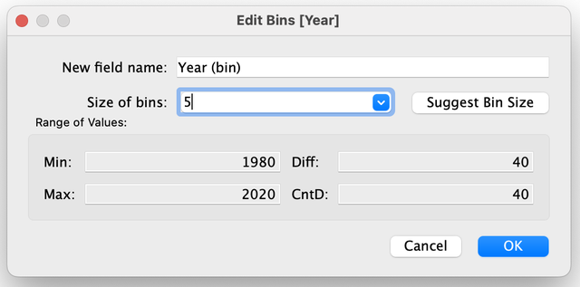
יישום: תקופת המכירות הגבוהה. זמן: 2 דקות. מנהל משחקים מבקש לדעת באיזו תקופה של חמש שנים נמכר מספר העותקים הגבוה ביותר.
- בתרשים של Year (bin) יש לאתר את העמודה הגבוהה ביותר.
- יש לקרוא את התווית שלה, ולהקליד אותה בנקודת הבדיקה שלהלן ובצ׳אט.
הרציונל: קיבוץ לטווחים מאפשר לענות על שאלה על תקופות, ולא על שנים בודדות.
נקודת בדיקה CPx1: כל משתתף מקליד בצ׳אט, וגם בתיבה כאן, את התווית של העמודה הגבוהה בתרשים, כפי שהיא מוצגת אצלו.
שימוש מקצועי: בקמעונאות מקבצים לקוחות לטווחי גיל (למשל 18 עד 24 ו-25 עד 34) או הזמנות לטווחי סכום, כדי לזהות היכן מתרכז רוב הנפח. הקיבוץ מצמצם מספר גדול של ערכים לכמה עמודות שניתן לקרוא.
חלוקת זמן
| דקות | מה קורה |
|---|---|
| 0 עד 1 | הרציונל: עמודה לכל שנה מול תקופות. שני הכללים: שדה מספרי בלבד, ותוצאה בדידה. |
| 1 עד 5 | תרגול מודרך: יצירת Year (bin): Convert to Measure, קליק ימני, Create, Bins, גודל 5, OK, וגרירה לתרשים. |
| 5 עד 8 | קריאת העמודות, השוואה לשנים בודדות, יישום ונקודת בדיקה CPx1. |
מה אומרים
- ״כשנדרש להציג תקופות ולא שנים בודדות, משתמשים ב-Bins.״
- ״Bins פועל על שדה מספרי בלבד, והתוצאה היא שדה בדיד (כחול). זהו קיבוץ ערכים לטווחים.״
- ״בגודל 5 כל עמודה מכילה חמש שנים, והתווית היא השנה הראשונה בקבוצה.״
- ״את התווית הראשונה יש לקרוא מהמסך, מפני שהיא עשויה להיות שונה בין גרסאות.״
- ״העמודה Null כוללת את המשחקים ללא שנה.״
מה מדגימים
- הערת אימות: חלון Bins (Size of bins) והתוויות שמתחילות ב-1980 לא אומתו בתוכנה המותקנת. ההדגמה מותאמת למה שמוצג על המסך.
- גיליון חדש, קליק ימני על Year ו-Convert to Measure, ושוב קליק ימני, Create > Bins, Size of bins = 5, OK.
- Year (bin) אל Columns ו-Global Sales אל Rows. להקריא את התוויות: 1980, 1985 ועד 2020. להצביע על העמודה Null.
- יישום: איזו תקופה מוצגת בעמודה הגבוהה. התשובה הצפויה: התווית 2005.
צ׳אט, סקרים ודגלים
- נקודת בדיקה CPx1 (אופציונלית): כל משתתף מקליד בצ׳אט את התווית של העמודה הגבוהה, והערך הצפוי הוא 2005. הערך 2010 מצביע על בחירה בעמודה השנייה בגובהה.
- אין חובה לאסוף דגלי סטטוס בבלוק זה.
עוזרים
- משתתף ללא Bins בתפריט: לבדוק אם Year הוא טקסט (Abc) או ממד, ולהפנות לשלב Convert to Measure.
- משתתף שגרר את Year המקורי: להחליף ל-Year (bin).
אם מאחרים או מקדימים
- מאחרים: להציג רק את התוצאה, ללא תרגול מודרך.
- מקדימים: לבקש לנסות גודל 10 ולהשוות את העמודות לגודל 5.
בונוס: Pages, דפדוף בתרשים
5 דק׳מתי משתמשים בבלוק הזה: כשנותרו חמש דקות פנויות, או כשנדרש להציג את אותו תרשים לכל ז׳אנר ללא בניית 12 גיליונות. תיבת זמן: 5 דקות. דרישות מקדימות: vgsales מחובר וגיליון חדש.
הרציונל: כדי להציג את אותו תרשים לכל ז׳אנר אפשר לבנות 12 גיליונות, או לגרור שדה אחד אל Pages ולדפדף בין הערכים. הכלי אינו נדרש לדשבורד שנבנה במפגש, והוא מתאים לחקירה מהירה של הנתונים.
Pages בהשוואה ל-Color ול-Filters
המדף Pages הוא תיבה שגוררים אליה שדה, וכך מתקבל תרשים שאפשר לדפדף בו: עמוד אחד לכל ערך של השדה, כאן עמוד אחד לכל ז׳אנר.
| הכלי | מה הוא עושה |
|---|---|
| Marks > Color | כל הז׳אנרים באותו תרשים, כל אחד בצבע אחר |
| Filters | מסתיר ז׳אנרים מהתרשים, ללא מחיקת נתונים |
| Pages | ז׳אנר אחד בכל פעם, ודפדוף בין הז׳אנרים |
הוספת Genre ל-Pages
- יש לפתוח גיליון חדש.
- יש לגרור את Year אל Columns ואת Global Sales אל Rows, כמו בתרשים הראשון.
- יש לגרור את Genre אל המדף Pages.
- בצד ימין של המסך נפתח פאנל דפדוף, עם חצים ימינה ושמאלה. יש ללחוץ על החצים ולעבור בין הז׳אנרים.
התוצאה: אותו תרשים מוצג, ובכל לחיצה הקו שייך לז׳אנר אחר, והערך של Genre בפאנל מתחלף. אם התפריט אצלכם שונה, יש לפעול לפי הכיתוב על המסך ולבחור את האפשרות המקבילה.
יישום: מכירות Action ב-2008. זמן: 3 דקות. מנהל משחקים מבקש לבדוק כמה עותקים נמכרו בז׳אנר Action בשנת 2008.
- בפאנל הדפדוף יש לעבור לעמוד של Action.
- יש לרחף מעל הנקודה (או העמודה) של שנת 2008 ולקרוא את הערך ב-Tooltip.
- יש להקליד את הערך בנקודת הבדיקה שלהלן ובצ׳אט.
הרציונל: Pages מאפשר לקרוא ערך של קבוצה אחת בתוך תרשים שמכסה את כל הקבוצות, ללא בניית גיליון נפרד.
נקודת בדיקה CPx2: כל משתתף מקליד בצ׳אט, וגם בתיבה כאן, את הערך המוצג אצלו ב-Tooltip בעמוד של Action בשנת 2008, כפי שהוא מוצג (עם ספרה עשרונית או בלעדיה).
שימוש מקצועי: בהצגה להנהלה מציגים לעיתים את אותו תרשים לכל אזור או לכל מוצר, זה אחר זה, לצורך השוואה. Pages משמש לכך ככלל להצגה ולחקירה מהירה.
חלוקת זמן
| דקות | מה קורה |
|---|---|
| 0 עד 1 | הרציונל: אותו תרשים ל-12 ז׳אנרים. ההבדל בין Color, Filters ו-Pages. |
| 1 עד 3 | תרגול מודרך: גיליון חדש, Year ו-Global Sales, גרירת Genre אל Pages ודפדוף. |
| 3 עד 5 | יישום: מכירות Action ב-2008, ונקודת בדיקה CPx2. |
מה אומרים
- ״Pages מאפשר לדפדף בתרשים אחד: עמוד אחד לכל ז׳אנר.״
- ״Color מציג את כל הז׳אנרים יחד, Filters מסתיר ז׳אנרים, ו-Pages מציג ז׳אנר אחד בכל פעם.״
- ״הכלי אינו נדרש לדשבורד של המפגש. הוא מתאים לחקירה מהירה.״
מה מדגימים
- הערת אימות: פתיחת פאנל עם חצים בצד ימין בגרירת Genre אל Pages לא אומתה בתוכנה המותקנת. ההדגמה מותאמת למה שמוצג על המסך.
- Year אל Columns, Global Sales אל Rows, Genre אל Pages. ללחוץ על החצים ולהקריא את שם הז׳אנר בכל עמוד.
- לעצור על Action, לרחף מעל שנת 2008: הערך 136.4.
צ׳אט, סקרים ודגלים
- נקודת בדיקה CPx2 (אופציונלית): כל משתתף מקליד בצ׳אט את הערך שמוצג אצלו. הערך הנכון הוא 136.4. הערך 106.5 או 139.4 מצביע על ריחוף מעל שנה אחרת.
עוזרים
- משתתף ללא פאנל דפדוף: לוודא ש-Genre נמצא על Pages ולא על Rows או Marks.
אם מאחרים או מקדימים
- מאחרים: הדגמה בלבד, ללא CPx2.
- מקדימים: להוסיף Color לפי Platform ולהציג כיצד Pages ו-Color פועלים יחד.
בונוס: Join, ארבעה סוגים
15 דק׳מתי משתמשים בבלוק הזה: כשנותרו 15 דקות לאחר פרסום הדשבורד. הבלוק רלוונטי במיוחד למי שניגש לבחינה בקורס, כי נושא Join וסוגיו נכללים בבחינה.
זמן: 15 דק׳: ארבע להסבר ולכלי האינטראקטיבי שבדף, שש לעבודה ב-Tableau וחמש ליישום. קובץ: toy_join.xlsx.
הרציונל: נתונים מאוחסנים לעיתים קרובות בכמה טבלאות: הזמנות בטבלה אחת ופרטי לקוחות בטבלה אחרת. ניתוח כמו ״מכירות לפי עיר״ דורש לחבר אותן. Join מחבר אותן לטבלה אחת. ההבחנה החשובה היא מה קורה לשורה שאין לה זוג בטבלה השנייה, וזה מה שמבדיל בין ארבעת הסוגים.
Join: חיבור שתי טבלאות לפי שדה מפתח
Join מחבר שתי טבלאות לטבלה אחת, לפי שדה שמופיע בשתיהן: שדה מפתח. בדוגמה זו השדה הוא Customer_ID. ההזמנה מציינת רק ״לקוח C2״, ובטבלת הלקוחות כתוב ש-C2 הוא Eli מתל אביב. לאחר ה-Join כל שורה מכילה גם את ההזמנה וגם את פרטי הלקוח.
חשוב: Join יוצר טבלה אחת מאוחדת. הוא אינו ERD, כלומר אינו ציור של קשרים בין טבלאות. ב-Tableau קיימת גם דרך אחרת לקשר טבלאות, Relationships, ובקורס הזה היא אינה בשימוש. הקובץ בדוגמה הוא קובץ של טבלאות קשורות: כל טבלה עוסקת בנושא אחד.
בקובץ שני גיליונות: Orders (8 הזמנות) ו-Customers (8 לקוחות). הקובץ כולל בכוונה שתי חריגות: הזמנה מספר 8 שייכת ללקוח C9 שאינו קיים ברשימת הלקוחות, ולשני לקוחות (C7 ו-C8) אין אף הזמנה.
ארבעת סוגי ה-Join
ארבעת הסוגים נקראים Inner Join, Left Join, Right Join ו-Full Outer Join, ובקיצור: Inner, Left, Right ו-Full Outer.
תרגול בכלי האינטראקטיבי: יש להחליף את סוג ה-Join ברשימה הנפתחת, לספור כמה שורות יש בתוצאה, ולבחון איפה מופיע Null ומה צבע השורות.
| סוג | מה נשאר | איפה יש Null | שורות |
|---|---|---|---|
| Inner | רק שורות שיש להן התאמה בשתי הטבלאות | אין | 7 |
| Left | כל ההזמנות (הטבלה השמאלית), גם בלי לקוח | בצד הימני, בפרטי הלקוח | 8 |
| Right | כל הלקוחות (הטבלה הימנית), גם בלי הזמנות | בצד השמאלי, בפרטי ההזמנה | 9 |
| Full Outer | הכול, משני הצדדים | בשני הצדדים | 10 |
כלל לקריאת תוצאה: אין Null כלל, Inner. Null רק בצד הימני, Left. Null רק בצד השמאלי, Right. Null בשני הצדדים, Full Outer. אם לכל השורות יש זוג, Inner ו-Left נראים זהים. אין בכך סתירה: ההבדל ביניהם מתגלה רק כשיש שורה בלי זוג.
תרגול ב-Tableau
- יש לפתוח חוברת עבודה חדשה (File > New), ואז Connect > Microsoft Excel, ולבחור toy_join.xlsx. נבחר Excel, ולא Text.
- בצד שמאל מופיעים שני גיליונות. האזור הריק מימין נשאר ריק עד שגוררים אליו טבלה.
- יש לגרור את Orders אל האזור הריק. זו הטבלה המרכזית: בה נמצאים האירועים.
- יש ללחוץ פעמיים על Orders (המשבצת הכחולה). בלי הפעולה הזו לא מתקבל מסך ה-Join.
- יש לגרור את Customers אל הצד של Orders.
- בין שתי הטבלאות מופיע סמל של שני עיגולים חופפים, סמל ה-Venn, שמציג את סוג ה-Join. יש ללחוץ עליו. אמורה להיפתח חלונית עם ארבעת הסוגים ועם שדה המפתח: Customer ID = Customer ID.
- יש לבחור Full Outer.
- ב-Sheet 1 (בתחתית המסך) יש ללחוץ פעמיים על שדה הספירה של הטבלה המאוחדת, בתחתית רשימת המדדים. שמו מסתיים ב-(Count), ובגרסאות ישנות הוא Number of Records. יש לקרוא את הערך שמוצג בגיליון.
- יש לחזור לדף ה-Data Source, להחליף ל-Inner ולבדוק שוב.
הערה: ב-Tableau קו תחתון מוצג כרווח, ולכן Customer_ID מופיע בתוכנה כ-Customer ID. מכיוון ששתי הטבלאות מכילות את אותו שדה, ייתכן שהוא יופיע פעמיים ב-Data pane, אחד מכל טבלה. בשורות בלי התאמה אחד מהם יהיה Null. זה תקין.
אם התפריט או החלונית אצלכם שונים, יש לפעול לפי הכיתוב על המסך ולבחור את האפשרות המקבילה.
נקודת בדיקה (Checkpoint): כל משתתף מקליד בצ׳אט את מספר הרשומות (הערך של שדה הספירה) שמוצג אצלו כשסוג ה-Join הוא Full Outer. ערך שונה מצביע על סוג Join אחר.
יישום: Join בנתונים מציאותיים
יישום: שיוך מכירות לסניפים (5 דקות). בקובץ של Scoop & Go יש גיליון Sales (6,575 שורות) וגיליון Branches (רשימת הסניפים), והשדה המפתח הוא Branch_Code. מנהל הרשת רוצה לדעת כמה שורות מכירה אינן משויכות לסניף רשום. הרציונל: ההבדל בין Left ל-Inner חושף שורות בלי זוג.
- יש לפתוח חוברת עבודה חדשה (File > New) ולהתחבר ל-scoop_sales_2024_2025.xlsx (Connect > Microsoft Excel), לגרור את Sales, ללחוץ עליו פעמיים ולגרור לצדו את Branches.
- יש לוודא ששדה המפתח הוא Branch Code (בקובץ: Branch_Code), ולבחור Left (Sales הוא הטבלה השמאלית). ב-Sheet 1 יש ללחוץ פעמיים על שדה הספירה ולרשום את הערך שמוצג.
- יש לחזור ל-Data Source, להחליף ל-Inner ולרשום את המספר החדש.
- התוצאה: שני מספרים שונים, והפער ביניהם הוא מספר שורות המכירה שאין להן סניף ברשימה.
נקודת בדיקה (Checkpoint): כל משתתף מקליד בצ׳אט את ההפרש בין מספר הרשומות ב-Left למספרן ב-Inner. ערך שונה מצביע על סוג Join או על סדר טבלאות אחר.
בסניף אחד ב-Branches אין מכירות כלל, ובגיליון Sales מופיע סניף פופ-אפ של הקיץ (POP01) שאינו רשום ב-Branches. ארבעת הסוגים נותנים תוצאות קרובות:
| סוג (Sales בצד שמאל) | שורות | הסבר |
|---|---|---|
| Inner | 6,436 | 139 שורות של הפופ-אפ אינן מופיעות, כי אין לו סניף ברשימה |
| Left | 6,575 | כל המכירות נשארות. לפופ-אפ יש Null בפרטי הסניף |
| Right | 6,437 | נוספת שורה אחת: הסניף שאין לו מכירות |
| Full Outer | 6,576 | שני ההבדלים יחד |
מסקנה: ההבדל הגדול ביותר הוא 139 שורות מתוך 6,575. בנתונים מציאותיים ההבדל עלול לחמוק מהעין, ולכן לומדים קודם על טבלה קטנה שבה רואים כל שורה. גם בקובץ הזה יש שדות שמופיעים בשתי הטבלאות, כמו Branch ו-City.
סיכון: הכפלת שורות. אם בטבלה השנייה יש כמה שורות לאותו מפתח, כל שורה של הטבלה הראשונה תופיע כמה פעמים, והסכומים יהיו גבוהים מהמצופה. לפני סיכום יש להשוות את ערך שדה הספירה לפני ה-Join ואחריו, ולוודא שהמספר תואם לצפוי.
| טענה | נכון? | הסבר |
|---|---|---|
| Join זהה ל-ERD | לא | Join יוצר טבלה אחת. ERD הוא ציור של קשרים |
| Join תמיד מסיר שורות בלי התאמה | לא | תלוי בסוג: ב-Inner כן, ב-Full Outer לא |
| אפשר לחבר רק שתי טבלאות | לא | אפשר לחבר יותר משתיים, בשרשרת |
| ב-Left Join יכולים להופיע Null | כן | כשלשורה בצד השמאלי אין זוג בצד הימני |
שימוש מקצועי: כדי לברר אילו לקוחות לא הזמינו כלל, מחברים לקוחות והזמנות כך שכל הלקוחות נשמרים, ומחפשים שורות עם Null בצד ההזמנות. שורות Null לאחר Join אינן תקלה: לעיתים הן התשובה לשאלה אילו רשומות חסרות.
בטבלת הזמנות (הטבלה השמאלית) יש הזמנה של לקוח C9, שאינו מופיע בטבלת הלקוחות (הטבלה הימנית). בוצע Left Join לפי Customer_ID. מה יקרה להזמנה הזאת?
- היא תוסר מהתוצאה, כי אין לה זוג בטבלת הלקוחות
- Tableau יציג שגיאה, כי אי אפשר לחבר שורה בלי התאמה
- היא תישאר בתוצאה, ופרטי הלקוח שלה (שם ועיר) יהיו Null
- היא תישאר בתוצאה, ו-Tableau ישלים לה פרטי לקוח מהשורה הקרובה ביותר
חלוקת זמן
| דקות | מה קורה |
|---|---|
| 0 עד 4 | Join, שדה מפתח, הכלי האינטראקטיבי של ארבעת הסוגים. מחליפים סוג וקוראים את מספר השורות (הדגמה) |
| 4 עד 10 | Tableau: Excel, גרירת Orders, לחיצה כפולה, גרירת Customers, Venn, Full Outer, שדה הספירה. נקודת בדיקה אופציונלית (תרגול מודרך) |
| 10 עד 15 | יישום: שיוך מכירות לסניפים בקובץ של Scoop & Go, CPx3b, טבלת טענות (Join מול ERD) ושאלת ההבנה (תרגול עצמאי) |
מה אומרים
- Join מחבר שתי טבלאות לטבלה אחת, לפי שדה שמופיע בשתיהן. התוצאה היא טבלה אחת, ולא ERD.
- ההבחנה בין ארבעת הסוגים היא מה קורה לשורה שאין לה זוג.
- כלל לקריאת תוצאה: אין Null, Inner. Null רק בימין, Left. Null רק בשמאל, Right. Null בשני הצדדים, Full Outer.
- חשוב: לחיצה כפולה על הטבלה המרכזית. בלי זה אין מסך Join.
- בנתונים מציאותיים ההבדל קטן, 139 שורות מתוך 6,575, ולכן לומדים על טבלה קטנה.
מה מדגימים
- בכלי האינטראקטיבי: Inner = 7 שורות, Left = 8, Right = 9, Full Outer = 10. מצביעים על השורה הצהובה (הזמנה 8) ועל האדומות (C7 ו-C8).
- Tableau: toy_join.xlsx, גרירת Orders, לחיצה כפולה, גרירת Customers, לחיצה על Venn, Full Outer. ערך שדה הספירה = 10. החלפה ל-Inner: 7.
- Scoop & Go: Sales ו-Branches לפי Branch Code. Inner 6,436, Left 6,575, Right 6,437, Full 6,576.
צ׳אט, סקרים ודגלים
- נקודת בדיקה CPx3: כל משתתף מקליד בצ׳אט את הערך 10. ערכים שגויים נפוצים: 7 (נשאר Inner), 8 (Left), 9 (Right).
- נקודת בדיקה CPx3b: כל משתתף מקליד בצ׳אט את ההפרש בין Left ל-Inner (139). ערכים שגויים נפוצים: 6,575 ו-6,436 (מספר שורות, לא הפרש).
- סקר קצר בצ׳אט: מי שמקבל Null רק בצד הימני כותב ״Left״.
עוזרים
- לזהות מי לא ביצע לחיצה כפולה, ומי לא מצא את סמל ה-Venn.
- משתמשי Mac: לחיצה כפולה ופתיחת החלונית דומים ל-Windows. אם הסמל אינו נראה, להציע להגדיל את החלון.
אם מאחרים או מקדימים
- מאחרים: להסתפק בכלי האינטראקטיבי, בכלל הקריאה ובטבלת הטענות, ולדלג על העבודה ב-Tableau.
- מקדימים: לעבור לבלוק של הנקניקים (שרשרת של חמש טבלאות), או לבקש לנסות Join על קובץ Scoop & Go.
בונוס: נקניקים בעברית, תוויות ו-Join בשרשרת
10 דק׳מתי משתמשים בבלוק הזה: כשנותרו 10 דקות ורוצים לבדוק איך Tableau מתנהג עם נתונים בעברית, או להתאמן על Join של כמה טבלאות, נושא שנבחן בקורס.
זמן: 10 דק׳: ארבע לעברית, שש לשרשרת, כולל שני יישומים קצרים. קבצים: sausage_hebrew_500.xlsx ו-sausage_join_clean.xlsx.
הרציונל: בארגונים בישראל נתונים רבים כתובים בעברית: שמות לקוחות, אזורים ומוצרים. Tableau מציג אותם, אך קיימות שלוש תקלות מוכרות, שיש להכיר לפני העבודה: כיווניות של סימנים, זיהוי של Year וקידוד הקובץ. החלק השני עוסק ב-Join מהקורס: חמש טבלאות בשרשרת.
חלק א׳: נתונים בעברית ב-Tableau
Tableau עובד עם נתונים בכל שפה, ולכן עברית בשמות שדות ובערכים מוצגת, אך סוגריים וסימנים בשולי מחרוזת עברית עלולים להופיע במקום שגוי. התפריטים של התוכנה נשארים באנגלית, כי אין תפריטים בעברית. הקובץ הבא מכיל תוויות בעברית, כמו ״סוג נקניק״ ו״אזור מכירה״.
| שם השדה | תוכן |
|---|---|
| סוג נקניק | פרנקפורטר, סלאמי, קבנוס ועוד |
| משקל (גרם) | מספר |
| ציון טעם (1-10) | ציון בין 1 ל-10 |
| היקף מכירות (₪) | סכום מכירות |
| אזור מכירה | צפון, ירושלים, מרכז, שפלה, דרום |
| ערוץ הפצה | אונליין, חנות פיזית, יריד מקומי, סיטונאי |
| שנה | 2018 עד 2024 |
| אחוז רווח (%) | מספר |
| סוג אריזה, מותג, מספר יחידות שנמכרו | סוג האריזה, שם המותג וכמות היחידות |
- יש לפתוח חוברת עבודה חדשה (File > New), ואז Connect > Microsoft Excel, ולבחור sausage_hebrew_500.xlsx. אם האזור הריק נשאר ריק, יש לגרור אליו את Sheet1.
- ב-Data pane מופיעים שמות השדות בעברית, כפי שהם כתובים בקובץ. התפריטים נשארים באנגלית.
- יש לבדוק את האייקון של השדה ״שנה״: ירוק או כחול, ממד או מדד. אין להניח ברירת מחדל. ל-Tableau יש רשימת מילים באנגלית (ובשפות נוספות) שמסייעת לו לזהות ממדים, כמו Year. עברית אינה ברשימה, ולכן ״שנה״ עלול להיטען כמדד.
- יש לגרור ״סוג נקניק״ אל Columns ו״היקף מכירות (₪)״ אל Rows.
- יש לבדוק את כותרת הציר ואת חלונית הריחוף: האם הסוגריים וסימן השקל נמצאים במקום הנכון.
התוצאה: עמודות עם כותרות בעברית. אם סימן מופיע במקום לא צפוי, מדובר בבעיית כיווניות של טקסט עברי עם סוגריים וסימנים, ולא בבעיה בנתונים.
תיקון: קליק ימני על שם השדה ב-Data pane (ב-Mac: Control + קליק), Rename, ושם קצר באנגלית, למשל Sales_ILS. סיבה נוספת לשמות קצרים: בנוסחה, שם שדה עם סוגריים וסימנים בתוך סוגריים מרובעים עלול להיות מוצג בסדר שגוי בעורך הנוסחאות, כי העורך כתוב משמאל לימין.
אם התפריט אצלכם שונה, יש לפעול לפי הכיתוב על המסך ולבחור את האפשרות המקבילה.
יישום: סוג הנקניק המוביל (2 דקות). מנהל המכירות רוצה לדעת איזה סוג נקניק מוביל בהיקף המכירות הכולל. הרציונל: מיון של תרשים עמודות עם כותרות בעברית עונה על שאלה עסקית ישירות.
- בתרשים שנבנה (״סוג נקניק״ ב-Columns, ״היקף מכירות (₪)״ ב-Rows) יש ללחוץ על לחצן המיון, מהגבוה לנמוך.
- התוצאה: העמודה השמאלית ביותר היא העמודה הגבוהה. יש להקליד בנקודת הבדיקה את שם הסוג שלה, בעברית.
נקודת בדיקה (Checkpoint): כל משתתף מקליד בצ׳אט את שם סוג הנקניק בעמודה הגבוהה ביותר. שם אחר מצביע על ציר או על מיון שנבחרו אחרת.
קידוד טקסט: זיהוי ותיקון
עברית שמוצגת כרצף סימנים לא קריא היא כמעט תמיד בעיית קידוד של הקובץ, ולא של Tableau או של הנתונים. הנתונים לא נפגעו, אלא אם יש בקובץ עצמו סימני שאלה אמיתיים. הכלל: נתונים בעברית נשמרים ב-xlsx. כשחייבים CSV: כותרות באנגלית, קידוד UTF-8 ותאריכים בצורה 2025-01-31.
| מה מוצג | הסיבה | מה עושים |
|---|---|---|
| מעוינים במקום אותיות | הקובץ נשמר בקידוד עברי ישן, והתוכנה קראה אותו כ-UTF-8 | לשמור שוב כ-CSV UTF-8, או לעבוד עם xlsx. סימני שאלה אמיתיים שכבר נכתבו בקובץ אינם ניתנים לשחזור, ויש לבקש את הקובץ שוב |
| אותיות לועזיות חריגות, כמו ש ו-ל | הקובץ ב-UTF-8, והתוכנה קראה אותו בקידוד מערבי | לשנות את הקידוד (Character set) בהגדרות הקובץ ל-UTF-8 |
| שלושה תווים חריגים לפני הכותרת הראשונה | ה-BOM, שלושה בתים נסתרים בתחילת קובץ UTF-8, לא נקרא נכון | לשמור שוב כ-CSV UTF-8, או לעבור ל-xlsx |
ב-Excel בוחרים Save As ואז CSV UTF-8 (Comma delimited). ב-Tableau, הקידוד נמצא בחץ שליד שם הטבלה, ב-Text file properties. אם התפריט אצלכם שונה, יש לפעול לפי הכיתוב על המסך ולבחור את האפשרות המקבילה.
שימוש מקצועי: בישראל קבצי נתונים של ארגונים מגיעים לעיתים מ-Excel בעברית, והבעיה הנפוצה היא קידוד של קובץ CSV ולא התוכנה. קובץ משובש אינו מתוקן ידנית. מבקשים את הקובץ שוב, בקידוד UTF-8.
חלק ב׳: שרשרת של חמש טבלאות
הקובץ sausage_join_clean.xlsx הוא גרסה נקייה של קובץ ה-Join מהקורס. בגרסה זו הוחלפו כמה שמות של מוצרים וקטגוריות בשמות ניטרליים, כדי לאפשר הקלטה ופרסום. שאר התוכן זהה.
בקובץ חמישה גיליונות: גיליון מרכזי שבו כל שורה היא מכירה, וארבעה גיליונות פרטים.
| גיליון | תוכן | מפתח |
|---|---|---|
| Sales of Sausages | המרכזי: שורה לכל מכירה (תאריך, כמות, מחיר) | Product ID, Customer ID, Platform ID |
| Customers | 10 לקוחות וסוג הלקוח | Customer ID |
| Platform | 12 ערוצי מכירה והאחראי על כל אחד | Platform ID |
| Products | 24 מוצרים | Product ID ו-Category ID |
| Product Category | שמות הקטגוריות | Category ID |
- יש לפתוח חוברת עבודה חדשה (File > New), ואז Connect > Microsoft Excel, ולבחור sausage_join_clean.xlsx. האזור הריק נשאר ריק עד שגוררים אליו טבלה.
- יש לגרור את Sales of Sausages, הטבלה המרכזית, אל האזור הריק.
- יש ללחוץ פעמיים עליה.
- יש לגרור את Customers, Platform ו-Products אל האזור הריק לצד הטבלה המרכזית. (בקורס מניחים אותן מתחתיה.)
- יש לגרור את Product Category על Products, ולא על Sales. מופיע אזור צבוע שמסמן איפה הטבלה תונח (בקורס הוא כתום).
- בחלק העליון של האזור אמורה להופיע כותרת שמציינת ש-Sales of Sausages מורכבת מחמש טבלאות.
- ב-Sheet 1 יש לגרור Customer Type אל Columns ו-Total Price אל Rows.
התוצאה: ארבע עמודות: Wholesale, Government, Private ו-Retail. הגבוהה ביותר היא Wholesale.
הרציונל של השרשרת: Product Category מחוברת ל-Products ולא ל-Sales, כי כך בנוי המבנה הטבעי: מכירה שייכת למוצר, ומוצר שייך לקטגוריה. (גם ב-Sales יש Category ID, אך נשמרת השרשרת הטבעית.) Join הוא טבלה אחת מאוחדת, גם כשהיא מורכבת מחמש טבלאות.
ייתכן שיופיעו שדות באותו שם פעמיים, כמו Product Name או Customer Name: אחד מכל טבלה. זה תקין, ובוחרים אחד.
אם התפריט אצלכם שונה, יש לפעול לפי הכיתוב על המסך ולבחור את האפשרות המקבילה.
נקודת בדיקה (Checkpoint): כל משתתף לוחץ פעמיים על שדה הספירה (בתחתית רשימת המדדים, שמו מסתיים ב-(Count) ובגרסאות ישנות Number of Records) ומקליד בצ׳אט את הערך שמוצג בגיליון. ערך שונה מצביע על חיבור שבוצע אחרת.
הערה: בקובץ הזה ארבעת סוגי ה-Join נותנים אותו מספר, כי לכל מכירה יש מוצר, לקוח ופלטפורמה, ואין טבלה עם שורה שאינה בשימוש. כשאין שורות בלי זוג, אין הבדל בין הסוגים. לכן נלמד קודם את קובץ הדוגמה toy_join.xlsx, שבו יש הזמנה בלי לקוח ולקוחות בלי הזמנה.
שימוש מקצועי: דוח מכירות מחבר לעיתים חמש או שש טבלאות: מכירות, לקוחות, מוצרים, קטגוריות וערוצי מכירה. מי שקורא שרשרת כזו יכול לאתר איפה שורות הוסרו. כל טבלה בשרשרת היא עוד נקודה שבה שורה יכולה להיעלם.
יישום: ערוץ המכירה המוביל (2 דקות). מנהלת המכירות רוצה לדעת איזה ערוץ מכירה מניב את סך המכירות הגבוה ביותר. הרציונל: שדה מטבלת פרטים (Platform Name) מאפשר לנתח את המכירות המרכזיות לפי ערוץ, בזכות ה-Join.
- גיליון חדש. יש לגרור את Platform Name אל Columns ואת Total Price אל Rows, ולמיין מהגבוה לנמוך.
- התוצאה: העמודה הגבוהה ביותר היא ערוץ אחד. יש להקליד את שמו בנקודת הבדיקה.
נקודת בדיקה (Checkpoint): כל משתתף מקליד בצ׳אט את שם הערוץ בעמודה הגבוהה ביותר. שם אחר מצביע על שדה או מיון שנבחרו אחרת.
חלוקת זמן
| דקות | מה קורה |
|---|---|
| 0 עד 2 | עברית ב-Tableau: טעינת הקובץ, בדיקת האייקון של ״שנה״, בניית עמודות עם כותרות בעברית (הדגמה) |
| 2 עד 5 | סוגריים וסימנים, Rename לשם קצר, קידוד: טבלת הסימנים הלא קריאים. יישום: סוג הנקניק המוביל, CPx4h (הדגמה ותרגול עצמאי) |
| 5 עד 10 | שרשרת חמש טבלאות: גרירה, לחיצה כפולה, Product Category על Products, ערך שדה הספירה = 500 (תרגול מודרך). יישום: ערוץ המכירה המוביל, CPx4b |
מה אומרים
- Tableau מציג עברית כראוי, והתפריטים נשארים באנגלית.
- רצף סימנים לא קריא בעברית הוא בעיית קידוד של הקובץ, ולא של Tableau או של הנתונים.
- הכלל: עברית ב-xlsx. CSV רק עם כותרות באנגלית ובקידוד UTF-8.
- חשוב: לחיצה כפולה על הטבלה המרכזית, ורק אחר כך גוררים את האחרות.
- Product Category מחוברת ל-Products ולא ל-Sales: מכירה, מוצר, קטגוריה.
מה מדגימים
- sausage_hebrew_500.xlsx: אם האזור ריק, גוררים את Sheet1. מצביעים על האייקון של ״שנה״ ואומרים בקול את הצבע שמוצג אצלנו, בלי להבטיח שזה כך אצל כולם.
- ״סוג נקניק״ אל Columns, ״היקף מכירות (₪)״ אל Rows. קוראים את כותרת הציר. אם סימן מופיע במקום לא צפוי, Rename ל-Sales_ILS.
- sausage_join_clean.xlsx: Sales of Sausages, לחיצה כפולה, Customers, Platform, Products, ו-Product Category על Products. קוראים את הכותרת שעל הטבלאות. ערך שדה הספירה = 500. Customer Type מול Total Price: Wholesale הגבוהה ביותר.
צ׳אט, סקרים ודגלים
- נקודות בדיקה אופציונליות: CPx4h (מרגז) ו-CPx4b (Event Pop-up Shop).
- נקודת בדיקה CPx4: כל משתתף מקליד בצ׳אט את ערך שדה הספירה. הערך הצפוי הוא 500. ערך אחר: לבדוק אם Product Category מחוברת ל-Products.
- שאלה בצ׳אט: מי רואה את ״שנה״ בירוק, ומי בכחול. אין מבטיחים ברירת מחדל.
עוזרים
- לזהות מי גרר Product Category אל Sales.
- עברית הפוכה: לבקש צילום מסך ולבדוק אם הבעיה היא כיווניות או קידוד.
אם מאחרים או מקדימים
- מאחרים: לדלג על חלק א׳. חלק ב׳ חשוב יותר לבחינה.
- מקדימים: לבקש מכל משתתף לבנות גיליון נוסף: Platform Name מול Total Price.
יישומים נוספים
5 עד 6 דק׳ ליישוםמתי משתמשים בבלוק הזה: כאשר משתתף סיים את משימת הבלוק הנוכחי לפני הזמן, או כאשר נותרו דקות פנויות. כל יישום עומד בפני עצמו, ומשתמש רק במה שנלמד עד כה. דרישות מקדימות: היישומים הראשון והשני דורשים vgsales, והראשון דורש גם שדה מחושב (בלוק c2). היישומים השלישי, הרביעי והחמישי דורשים חוברת של Scoop & Go (בלוק c1). אפשר להשתמש בבלוק זה החל מ-3:02. תיבת זמן: 5 עד 6 דקות ליישום.
הרציונל: תהליך שנלמד נבחן כאשר הוא מיושם על שאלה חדשה. בכל יישום שאלה עסקית אחת, השדות הנדרשים ותוצאה שאפשר לבדוק בנקודת בדיקה.
מכירות מחוץ לאירופה (vgsales)
יישום: מנהל שיווק מבקש לדעת כמה עותקים נמכרו מחוץ לאירופה. בקובץ אין שדה כזה, ולכן בונים אותו. שדות: Global Sales, EU Sales. זמן: 6 דקות. הרציונל: כאשר שדה חסר, בונים אותו כשדה מחושב. המכירות הן במיליוני עותקים.
- גיליון חדש (New Sheet) על vgsales.
- קליק ימני (ב-Mac: Control + קליק) על שדה בחלונית Data, Create, Calculated Field. שם: Sales Outside EU, ונוסחה:
בחלון צריכה להופיע ההודעה The calculation is valid. אם התפריט אצלכם שונה, יש לפעול לפי הכיתוב על המסך ולבחור את האפשרות המקבילה.
[Global Sales] - [EU Sales] - יש לגרור את Sales Outside EU אל Rows. התוצאה: עמודה אחת, והערך מופיע ב-tooltip כשמרחפים מעליה.
נקודת בדיקה (Checkpoint): כל משתתף מקליד בצ׳אט (וגם בתיבה כאן) את הערך של SUM(Sales Outside EU), כפי שהוא מוצג אצלו. ערך שונה מצביע על שלב שבוצע אחרת.
ז׳אנר מוביל באירופה (vgsales)
יישום: מנהל תחום משחקים מבקש לדעת באיזה ז׳אנר נמכר מספר העותקים הגבוה ביותר באירופה. שדות: Genre, EU Sales. זמן: 5 דקות. הרציונל: השוואה בין קטגוריות נעשית בעמודות ממוינות, ושדה המכירות נבחר לפי השאלה.
- גיליון חדש (New Sheet) על vgsales, ללא שדות נוספים מהגיליון הקודם.
- יש לגרור את Genre אל Rows ואת EU Sales אל Columns, ולמיין מהגדול לקטן.
- התוצאה: תרשים עמודות אופקי, והז׳אנר המוביל בראש. יש לרחף מעל העמודה הראשונה ולקרוא את הערך.
נקודת בדיקה (Checkpoint): כל משתתף מקליד בצ׳אט (וגם בתיבה כאן) את הערך של העמודה הארוכה ביותר, כפי שהוא מוצג אצלו. ערך שונה מצביע על שלב שבוצע אחרת.
רווח לפי קטגוריה (Scoop & Go)
יישום: מנהל התפעול של Scoop & Go מבקש לדעת איזו קטגוריה מניבה את סך הרווח הגבוה ביותר, ולהשוות זאת לסך המכירות של הקטגוריות. שדות: Category, Profit, Sales. זמן: 6 דקות. הרציונל: מכירות ורווח הם שני מדדים שונים, ולכן הדירוג של קטגוריה בהם עשוי להיות שונה.
- גיליון חדש על Scoop & Go, בשם Profit by category: Category אל Rows, Profit אל Columns, מיון מהגדול לקטן.
- גיליון נוסף בשם Sales by category: Category אל Rows, Sales אל Columns, מיון מהגדול לקטן.
- התוצאה: שני תרשימי עמודות אופקיים. יש להשוות איזו קטגוריה בראש כל אחד, וכותבים בצ׳אט משפט אחד על ההשוואה.
נקודת בדיקה (Checkpoint): כל משתתף מקליד בצ׳אט (וגם בתיבה כאן) את הערך של העמודה הארוכה ביותר בגיליון Profit by category, כפי שהוא מוצג אצלו. ערך שונה מצביע על שלב שבוצע אחרת.
הזמנות לפי ערוץ ושנה (Scoop & Go)
יישום: צוות השיווק מבקש לדעת כמה הזמנות התקבלו בכל ערוץ בכל אחת משתי השנים. שדות: Order Date (חלק Year), Channel, שדה הספירה (בתחתית רשימת המדדים: שם הטבלה ואחריו (Count), בגרסאות ישנות Number of Records). זמן: 6 דקות. הרציונל: כאשר שואלים כמה, סופרים רשומות, ואין צורך בשדה מספרי נוסף.
- גיליון חדש בשם Orders by year. יש לגרור את Order Date אל Columns ולבחור בו Year מהרשימה הבדידה (ה-Pill כחול).
- יש לגרור את שדה הספירה אל Rows, ואת Channel אל Color בכרטיס Marks.
- התוצאה: שתי קבוצות של עמודות, אחת לכל שנה, וכל קבוצה מפולחת לשלושה ערוצים. יש לרחף מעל החלק של App בשנה השנייה ולקרוא את הערך.
נקודת בדיקה (Checkpoint): כל משתתף מקליד בצ׳אט (וגם בתיבה כאן) את מספר ההזמנות של הערוץ App בשנה השנייה, כפי שהוא מוצג אצלו. ערך שונה מצביע על שלב שבוצע אחרת.
ז׳אנר מוביל בשאר העולם (vgsales)
יישום: מנהל תחום משחקים מבקש לדעת באיזה ז׳אנר נמכר מספר העותקים הגבוה ביותר בשאר העולם, כלומר מחוץ לצפון אמריקה, לאירופה וליפן. שדות: Genre, Other Sales. זמן: 5 דקות. הרציונל: שדה המכירות נבחר לפי השאלה, והתהליך זהה לתהליך של אזור אחר.
- גיליון חדש (New Sheet) על vgsales, ללא שדות נוספים מהגיליון הקודם.
- יש לגרור את Genre אל Rows ואת Other Sales אל Columns, ולמיין מהגדול לקטן.
- התוצאה: תרשים עמודות אופקי, והז׳אנר המוביל בראש. יש לרחף מעל העמודה הראשונה ולקרוא את הערך.
נקודת בדיקה (Checkpoint): כל משתתף מקליד בצ׳אט (וגם בתיבה כאן) את הערך של העמודה הארוכה ביותר, כפי שהוא מוצג אצלו. ערך שונה מצביע על שלב שבוצע אחרת.
שימוש מקצועי: שאלות עסקיות מסוג אילו קטגוריות, אילו אזורים ובכמה הזמנות חוזרות בכל ארגון. מי שמזהה את הסוג של השאלה בוחר מהר את השדה, את החישוב המסכם ואת סוג התרשים.
חלוקת זמן
| שעה | דק׳ | מה קורה | מצב |
|---|---|---|---|
| אופציונלי | 5 עד 6 ליישום | משתתפים שסיימו משימה לפני הזמן בוחרים יישום אחד לפי העניין, ועובדים באופן עצמאי | H, C |
מה אומרים
- ״מי שסיים מוזמן לבחור יישום אחד מהבלוק ״יישומים נוספים״. לכל יישום יש שאלה עסקית, שדות ונקודת בדיקה.״
- ״בכל יישום יש להקליד את הערך בנקודת הבדיקה. ערך שונה מצביע על שלב שבוצע אחרת.״
- ״מי שנתקע מסמן דגל אדום ועוזר יגיע.״
מה מדגימים
- אם הכיתה כולה מקדימה: מדגימים את יישום מכירות מחוץ לאירופה, כי הוא מתרגל שדה מחושב על vgsales. הערך הצפוי: 6,486.31.
- ערכי הבדיקה: מכירות מחוץ לאירופה: 6,486.31 (סכום EU Sales הכולל הוא 2,434.13). ז׳אנר מוביל באירופה: Action, 525.0, ואחריו Sports 376.85. רווח לפי קטגוריה: 36,728.3, ובגיליון המכירות הקטגוריה המובילה היא Cups (69,470.0). הזמנות לפי ערוץ ושנה: 739 הזמנות באפליקציה בשנה השנייה, מול 318 בשנה הראשונה. ז׳אנר מוביל בשאר העולם: Action, 187.4, ואחריו Sports 134.97.
צ׳אט, סקרים ודגלים
- נקודות הבדיקה CPap1 עד CPap5 מוקלדות בצ׳אט. הקודים השגויים הנפוצים מופיעים בהודעת הנקודה עצמה.
עוזרים
- העוזרים מטפלים קודם במשתתפים שעדיין לא סיימו את משימת הבלוק, ורק אחר כך ביישומים הנוספים.
אם מאחרים או מקדימים
- איחור: הבלוק אינו מועבר בכיתה כולה, ורק משתתפים שסיימו משימה לפני הזמן עוברים אליו.
- הקדמה: מוסיפים יישום נוסף, ובוחרים לפי העניין: אחד על vgsales ואחד על Scoop & Go.
סיכום התקדמות